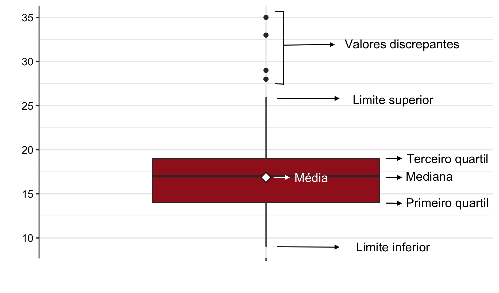
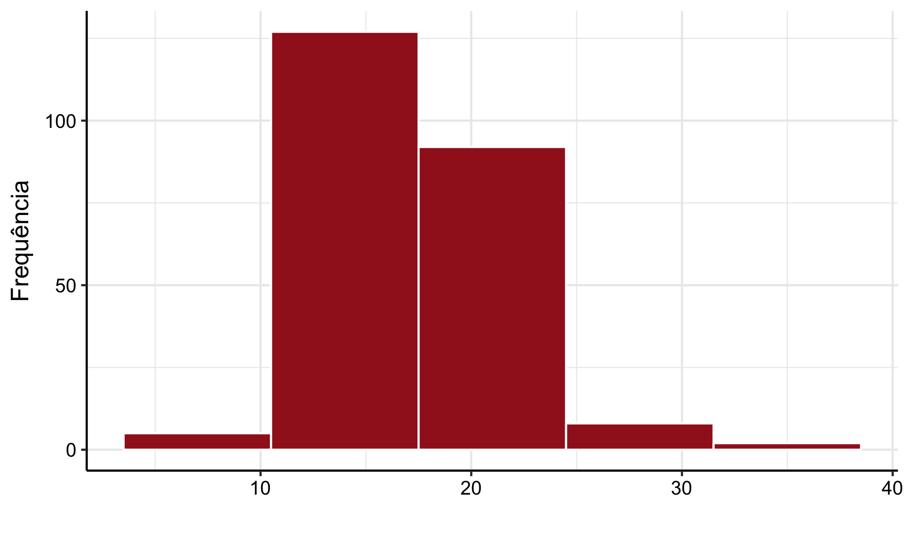
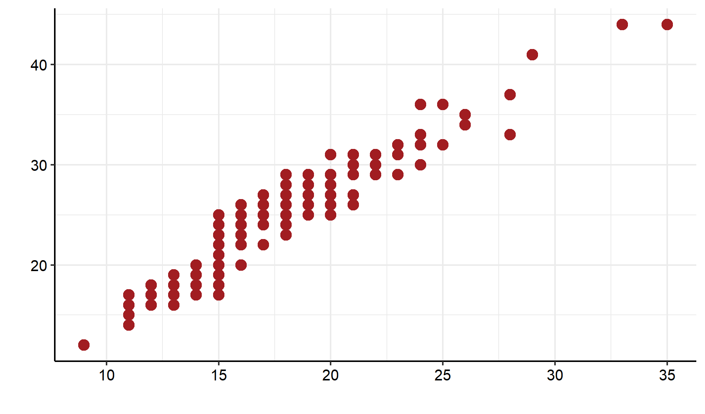
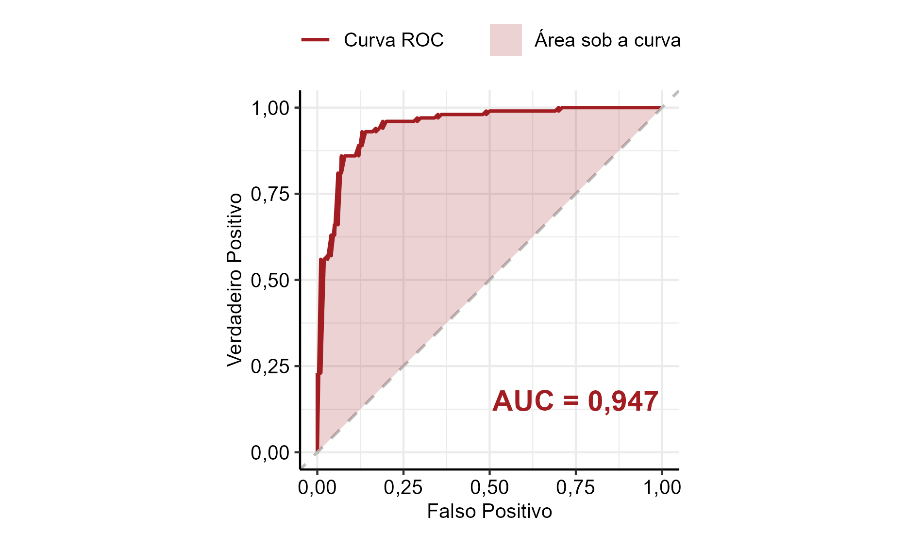

Referencial Teórico
Análise Descritiva Univariada
Frequência Relativa
A frequência relativa é utilizada para a comparação entre classes de uma variável categórica com \(c\) categorias, ou para comparar uma mesma categoria em diferentes estudos.
A frequência relativa da categoria \(j\) é dada por:
\[ f_j=\frac{n_j}{n} \]
Com:
\(j = 1, \, ..., \, c\)
\(n_j =\) número de observações da categoria \(j\)
\(n =\) número total de observações
Geralmente, a frequência relativa é utilizada em porcentagem, dada por:
\[100 \times f_j\]
Média
A média é a soma das observações dividida pelo número total delas, dada pela fórmula:
\[\bar{X}=\frac{\sum\limits_{i=1}^{n}X_i}{n}\]
Com:
\(i = 1, \, 2, \, ..., \, n\)
\(n =\) número total de observações
Mediana
Sejam as \(n\) observações de um conjunto de dados \(X=X_{(1)},X_{(2)},\ldots, X_{(n)}\) de determinada variável ordenadas de forma crescente. A mediana do conjunto de dados \(X\) é o valor que deixa metade das observações abaixo dela e metade dos dados acima.
Com isso, pode-se calcular a mediana da seguinte forma:
\[ med(X) = \begin{cases} X_{\frac{n+1}{2}}, \textrm{para n ímpar} \\ \frac{X_{\frac{n}{2}}+X_{\frac{n}{2} + 1}}{2}, \textrm{para n par} \\ \end{cases} \]
Quartis
Os quartis são separatrizes que dividem o conjunto de dados em quatro partes iguais. O primeiro quartil (ou inferior) delimita os 25% menores valores, o segundo representa a mediana, e o terceiro delimita os 25% maiores valores. Inicialmente deve-se calcular a posição do quartil:
Posição do primeiro quartil \(P_1\): \[P_1=\frac{n+1}{4}\]
Posição da mediana (segundo quartil) \(P_2\): \[P_2 = \frac{n+1}{2}\]
Posição do terceiro quartil \(P_3\): \[P_3=\frac{3 \times (n+1)}{4}\]
Com \(n\) sendo o tamanho da amostra. Dessa forma, \(X_{\left( P_i \right)}\) é o valor do \(i\)-ésimo quartil, onde \(X_{\left( j \right)}\) representa a \(j\)-ésima observação dos dados ordenados.
Se o cálculo da posição resultar em uma fração, deve-se fazer a média entre o valor que está na posição do inteiro anterior e do seguinte ao da posição.
Variância
A variância é uma medida que avalia o quanto os dados estão dispersos em relação à média, em uma escala ao quadrado da escala dos dados.
Variância Populacional
Para uma população, a variância é dada por:
\[\sigma^2=\frac{\sum\limits_{i=1}^{N}\left(X_i - \mu\right)^2}{N}\]
Com:
\(X_i =\) \(i\)-ésima observação da população
\(\mu =\) média populacional
\(N =\) tamanho da população
Variância Amostral
Para uma amostra, a variância é dada por:
\[S^2=\frac{\sum\limits_{i=1}^{n}\left(X_i - \bar{X}\right)^2}{n-1}\]
Com:
\(X_i =\) i-ésima observação da amostra
\(\bar{X} =\) média amostral
\(n =\) tamanho da amostra
Desvio Padrão
O desvio padrão é a raiz quadrada da variância. Ele avalia o quanto os dados estão dispersos em relação à média.
Desvio Padrão Populacional
Para uma população, o desvio padrão é dado por:
\[\sigma=\sqrt{\frac{\sum\limits_{i=1}^{N}\left(X_i - \mu\right)^2}{N}}\]
Com:
\(X_i =\) i-ésima observação da população
\(\mu =\) média populacional
\(N =\) tamanho da população
Desvio Padrão Amostral
Para uma amostra, o desvio padrão é dado por:
\[S=\sqrt{\frac{\sum\limits_{i=1}^{n}\left(X_i - \bar{X}\right)^2}{n-1}}\]
Com:
\(X_i =\) i-ésima observação da amostra
\(\bar{X} =\) média amostral
\(n =\) tamanho da amostra
Coeficiente de Variação
O coeficiente de variação fornece a dispersão dos dados em relação à média. Quanto menor for o seu valor, mais homogêneos serão os dados. O coeficiente de variação é considerado baixo (apontando um conjunto de dados homogêneo) quando for menor ou igual a 25%. Ele é dado pela fórmula:
\[C_V=\frac{S}{\bar{X}}\times 100\]
Com:
\(S =\) desvio padrão amostral
\(\bar{X} =\) média amostral
Coeficiente de Assimetria
O coeficiente de assimetria quantifica a simetria dos dados. Um valor positivo indica que os dados estão concentrados à esquerda em sua função de distribuição, enquanto um valor negativo indica maior concentração à direita. A fórmula é:
\[C_{Assimetria} = \frac{1}{n}\times\sum\limits_{i=1}^{n} \left(\frac{X_i - \bar{X}}{S}\right)^3 \]
Com:
\(X_i =\) i-ésima observação da amostra
\(\bar{X} =\) média amostral
\(S=\) desvio padrão amostral
\(n=\) tamanho da amostra
Curtose
O coeficiente de curtose quantifica o achatamento da função de distribuição em relação à distribuição Normal e é dado por:
\[Curtose = \frac{1}{n}\times\sum\limits_{i=1}^{n}\left(\frac{ X_i-\bar{X} }{S} \right)^4 - 3\]
Com:
\(X_i =\) i-ésima observação da amostra
\(\bar{X} =\) média amostral
\(S =\) desvio padrão amostral
\(n =\) tamanho da amostra
Uma distribuição é dita mesocúrtica quando possui curtose nula. Quando a curtose é positiva, a distribuição é leptocúrtica (mais afunilada e com pico). Valores negativos indicam uma distribuição platicúrtica (mais achatada).
Boxplot
O boxplot é uma representação gráfica na qual se pode perceber de forma mais clara como os dados estão distribuídos. A figura abaixo ilustra um exemplo de boxplot.

A porção inferior do retângulo diz respeito ao primeiro quartil, enquanto a superior indica o terceiro quartil. Já o traço no interior do retângulo representa a mediana do conjunto de dados, ou seja, o valor em que o conjunto de dados é dividido em dois subconjuntos de mesmo tamanho. A média é representada pelo losango branco e os pontos são outliers. Os outliers são valores discrepantes da série de dados, ou seja, valores que não demonstram a realidade de um conjunto de dados.
Histograma
O histograma é uma representação gráfica utilizada para a visualização da distribuição dos dados e pode ser construído por valores absolutos, frequência relativa ou densidade. A figura abaixo ilustra um exemplo de histograma.

Gráfico de Dispersão
O gráfico de dispersão é uma representação gráfica utilizada para ilustrar o comportamento conjunto de duas variáveis quantitativas. A figura abaixo ilustra um exemplo de gráfico de dispersão, onde cada ponto representa uma observação do banco de dados.

Tipos de Variáveis
Qualitativas
As variáveis qualitativas são as variáveis não numéricas, que representam categorias ou características da população. Estas subdividem-se em:
- Nominais: quando não existe uma ordem entre as categorias da variável (exemplos: sexo, cor dos olhos, fumante ou não, etc)
- Ordinais: quando existe uma ordem entre as categorias da variável (exemplos: nível de escolaridade, mês, estágio de doença, etc)
Quantitativas
As variáveis quantitativas são as variáveis numéricas, que representam características numéricas da população, ou seja, quantidades. Estas subdividem-se em:
- Discretas: quando os possíveis valores são enumeráveis (exemplos: número de filhos, número de cigarros fumados, etc)
- Contínuas: quando os possíveis valores são resultado de medições (exemplos: massa, altura, tempo, etc)
Coeficiente de Correlação de Pearson
O coeficiente de correlação de Pearson é uma medida que verifica o grau de relação linear entre duas variáveis quantitativas. Este coeficiente varia entre os valores -1 e 1. O valor zero significa que não há relação linear entre as variáveis. Quando o valor do coeficiente \(r\) é negativo, diz-se existir uma relação de grandeza inversamente proporcional entre as variáveis. Analogamente, quando \(r\) é positivo, diz-se que as duas variáveis são diretamente proporcionais.
O coeficiente de correlação de Pearson é normalmente representado pela letra \(r\) e a sua fórmula de cálculo é:
\[ r_{Pearson} = \frac{\displaystyle \sum_{i=1}^{n} \left [ \left(x_i-\bar{x}\right) \left(y_i-\bar{y}\right) \right]}{\sqrt{\displaystyle \sum_{i=1}^{n} x_i^2 - n\bar{x}^2} \times \sqrt{\displaystyle \sum_{i=1}^{n} y_i^2 - n\bar{y}^2}} \]
Onde:
- \(x_i =\) i-ésimo valor da variável \(X\)
- \(y_i =\) i-ésimo valor da variável \(Y\)
- \(\bar{x} =\) média dos valores da variável \(X\)
- \(\bar{y} =\) média dos valores da variável \(Y\)
Vale ressaltar que o coeficiente de Pearson é paramétrico e, portanto, sensível quanto à normalidade (simetria) dos dados.
Coeficiente de Correlação de Spearman
O coeficiente de correlação de Spearman é uma medida não paramétrica que verifica, através de postos de variáveis quantitativas ou qualitativas ordinais, o grau de relação linear entre duas variáveis. Este coeficiente varia entre os valores -1 e 1. O valor zero significa que não há relação linear entre as variáveis. Quando o valor do coeficiente \(\rho\) é negativo, diz-se existir uma relação de grandeza inversamente proporcional entre as variáveis. Analogamente, quando \(\rho\) é positivo, diz-se que as duas variáveis são diretamente proporcionais.
O coeficiente é calculado da seguinte maneira:
\[ \rho_{Spearman} = \frac{ \displaystyle \sum_{i=1}^{n} \left[\left(R(x_i)-\frac{n+1}{2}\right)\left(R(y_i)-\frac{n+1}{2}\right)\right]} {\sqrt{\displaystyle \sum_{i=1}^{n} \left(R(x_i)^2\right)-n\left(\frac{n+1}{2}\right)^{2}} \times \sqrt{\displaystyle \sum_{i=1}^{n} \left(R(y_i)^2 \right) -n\left(\frac{n+1}{2}\right)^{2}}} \]
Onde:
- \(x_i =\) i-ésimo valor da variável \(X\)
- \(y_i =\) i-ésimo valor da variável \(Y\)
- \(R(x_i) =\) posto relativo à observação \(i\) de \(X\)
- \(R(y_i) =\) posto relativo à observação \(i\) de \(Y\)
- \(n =\) número total de observações na amostra
Coeficiente de Correlação de Kendall
O coeficiente de correlação de Kendall é uma medida não paramétrica que verifica o grau de relação linear entre duas variáveis. Este coeficiente varia entre os valores -1 e 1 e utiliza observações pareadas. O valor zero significa que não há relação linear entre as variáveis. Quando o valor do coeficiente \(\tau\) é negativo, diz-se existir uma relação de grandeza inversamente proporcional entre as variáveis. Analogamente, quando \(\tau\) é positivo, diz-se que as duas variáveis são diretamente proporcionais.
O coeficiente de correlação de Kendall é normalmente representado pela letra \(\tau\), e sua fórmula de cálculo é:
\[ \tau = \frac{C-D}{\frac{n(n-1)}{2}} \]
Onde:
- \(C =\) número de pares concordantes
- \(D =\) número de pares discordantes
- \(n =\) tamanho da amostra
Os pares \((x_i,y_i)\) e \((x_j,y_j)\) são considerados concordantes se ambas as partes concordam, ou seja, se \(x_i>x_j\) e \(y_i>y_j\) ou se \(x_i<x_j\) e \(y_i<y_j\).
Já os pares \((x_i,y_i)\) e \((x_j,y_j)\) são discordantes se as partes discordam, ou seja, se \(x_i>x_j\) e \(y_i<y_j\) ou se \(x_i<x_j\) e \(y_i>y_j\).
Coeficiente de Goodman-Kruskal
O \(\lambda\) de Goodman-Kruskal mede a associação para tabulações cruzadas de variáveis qualitativas nominais. Ele mede a melhoria percentual da probabilidade da variável dependente dado o valor de outras variáveis.
O coeficiente de Goodman-Kruskal é normalmente representado pela letra \(\lambda\), e sua fórmula de cálculo é:
\[ \lambda = \frac{S-R}{N-R} \]
Onde:
- \(S =\) a soma da maior frequência das células para cada linha
- \(R =\) o maior total de linha
- \(N =\) o total de todas as frequências das células
Coeficiente de Determinação (\(R^2\))
O coeficiente \(R^2\) de determinação utiliza a variância dentro de cada grupo para explicar a variância global dos dados. Uma forma de quantificar essa medida é utilizar a média das variâncias em cada categoria, dada por:
\[ \overline{var(S)} = \frac{\displaystyle \sum_{i=1}^{k}n_i \times var_i(S)}{n} \]
Onde:
- \(n =\) tamanho total da amostra
- \(var_i(S) =\) variância dentro da categoria \(i\)
- \(n_i =\) tamanho da amostra \(i\)
Assim, o coeficiente de determinação é dado por:
\[ R^2 = 1 - \frac{\overline{var(S)}}{var(S)} \]
Com $ 0 R^2 $. O valor 1 indica que a variável categórica explica 100% da variação da variável quantitativa, enquanto o valor 0 indica ausência de impacto.
Qui-Quadrado
A estatística Qui-Quadrado é uma medida de divergência entre a distribuição dos dados e uma distribuição esperada ou hipotética. Também pode ser usada para verificar independência ou associação entre variáveis categóricas. É calculada por:
\[ \chi^2 = \sum_{i=1}^{n} \frac{(O_i-E_i)^2}{E_i} \]
Onde:
- \(O_i =\) frequência observada
- \(E_i =\) frequência esperada
Coeficiente de Contingência
O coeficiente de contingência é derivado do Qui-Quadrado e ajusta seu valor para fornecer um referencial de comparação. Seu cálculo é:
\[ C=\sqrt{\frac{\chi^2}{\chi^2+n}} \]
Onde:
- \(\chi^2 =\) valor da estatística Qui-Quadrado
- \(n =\) tamanho da amostra
Coeficiente de Contingência Corrigido
O coeficiente de contingência corrigido ajusta o coeficiente de contingência, permitindo uma padronização entre 0 e 1. É calculado da seguinte forma:
\[ C_{corr}= \sqrt{\frac{k}{k-1}} \times \sqrt{\frac{\chi^2}{\chi^2 + n}} \]
Onde:
- \(k =\) mínimo entre o número de linhas e colunas
- \(\chi^2 =\) valor da estatística Qui-Quadrado
- \(n =\) tamanho da amostra
Coeficiente de Contingência V de Cramer
O coeficiente V de Cramer é utilizado para relacionar variáveis qualitativas nominais e/ou ordinais, assumindo valores entre 0 e 1. O valor 0 indica ausência de associação, e valores próximos a 1 indicam associação mais forte. O cálculo é feito por:
\[ V = \sqrt{\frac{\chi^2}{n(k-1)}} \]
Onde:
- \(\chi^2 =\) valor da estatística Qui-Quadrado
- \(n =\) tamanho da amostra
- \(k =\) mínimo entre o número de linhas e colunas
Definição para Testes
Teste de Hipóteses
O teste de hipóteses tem como objetivo fornecer uma metodologia para verificar se os dados das amostras possuem indicativos que comprovem, ou não, uma hipótese previamente formulada. Ele é composto por duas hipóteses:
Essa decisão é tomada por meio da construção de uma região crítica, ou seja, região de rejeição do teste.
Tipos de teste: bilateral e unilateral
Para a formulação de um teste, deve-se definir as hipóteses de interesse. Em geral, a hipótese nula é composta por uma igualdade (por exemplo, \(H_{0}: \theta = \theta_{0}\)). Já a hipótese alternativa depende do grau de conhecimento que se tem do problema em estudo. Assim, tem-se três formas de elaborar \(H_{1}\) que classificam os testes em duas categorias:
Teste Bilateral:
Esse é o teste mais geral, em que a hipótese alternativa consiste em verificar se existe diferença entre os parâmetros de interesse, independentemente de um ser maior ou menor que o outro. Dessa forma, tem-se:\[ H_{1}: \theta \neq \theta_{0} \]
Teste Unilateral:
Dependendo das informações que o pesquisador possui a respeito do problema e os questionamentos que possui, a hipótese alternativa pode ser feita de forma a verificar se existe diferença entre os parâmetros em um dos sentidos. Ou seja:\[ H_{1}: \theta < \theta_{0} \] ou \[ H_{1}: \theta > \theta_{0} \] ## Tipos de Erros Ao realizar um teste de hipóteses, existem dois erros associados: Erro do Tipo I e Erro do Tipo II.
Erro do Tipo I:
Esse erro é caracterizado por rejeitar a hipótese nula (\(H_{0}\)) quando essa é verdadeira. A probabilidade associada a esse erro é denotada por \(\alpha\), também conhecido como nível de significância do teste.Erro do Tipo II:
Ao não rejeitar \(H_{0}\) quando, na verdade, é falsa, está sendo cometido o Erro do Tipo II. A probabilidade de se cometer este erro é denotada por \(\beta\).
Nível de significância (\(\alpha\))
O nível de significância do teste é o nome dado à probabilidade de se rejeitar a hipótese nula quando essa é verdadeira; essa rejeição é chamada de erro do tipo I. O valor de \(\alpha\) é fixado antes da extração da amostra e, usualmente, assume 5%, 1% ou 0,1%.
Por exemplo, um nível de significância de \(\alpha=0,05\) (5%) significa que, se for tomada uma grande quantidade de amostras, em 5% delas a hipótese nula será rejeitada quando não havia evidências para essa rejeição, isto é, a probabilidade de se tomar a decisão correta é de 95%.
Estatística do Teste
A estatística do teste é o estimador que será utilizado para testar se a hipótese nula (\(H_{0}\)) é verdadeira ou não. Ela é escolhida por meio das teorias estatísticas.
P-valor
O P-valor, ou nível descritivo, é uma medida utilizada para sintetizar o resultado de um teste de hipóteses. Ele também pode ser chamado de probabilidade de significância do teste e indica a probabilidade de se obter um resultado da estatística de teste mais extremo do que o observado na presente amostra, considerando que a hipótese nula é verdadeira. Dessa forma, rejeita-se \(H_{0}\) quando \(P\text{-valor} < \alpha\), porque a chance de uma nova amostra possuir valores tão extremos quanto o encontrado é baixa, ou seja, há evidências para a rejeição da hipótese nula.
Intervalo de Confiança
Quando calcula-se um estimador pontual para o parâmetro, não é possível definir qual a possível magnitude do erro que se está cometendo. Com o objetivo de associar um erro à estimativa, são construídos os intervalos de confiança que se baseiam na distribuição amostral do estimador pontual.
Dessa forma, considere \(T\) um estimador pontual para \(\theta\) e que a distribuição amostral de \(T\) é conhecida. O intervalo de confiança para o parâmetro \(\theta\) será dado por \(t_{1}\) e \(t_{2}\), tal que:
\[ P(t_{1} < \theta < t_{2}) = \gamma \]
A probabilidade \(\gamma\) é estabelecida no início do estudo e representa o nível de confiança do intervalo. A interpretação desse resultado é que, se forem tiradas várias amostras de mesmo tamanho e forem calculados intervalos de confiança para cada uma, \(100 \times \gamma \%\) dos intervalos irão conter o parâmetro \(\theta\). Assim, ao calcular um intervalo, pode-se dizer que há \(100 \times \gamma \%\) de confiança de que o intervalo contém o parâmetro de interesse.
Teste de Normalidade
Os testes de normalidade são utilizados para verificar se uma variável aleatória segue um distribuição Normal de probabilidade ou não. Eles são muito importantes, pois impactam em qual teste deve ser utilizado em uma análise futura. Se o resultado do teste confirmar que a variável segue uma distribuição normal, procedimentos paramétricos podem e devem ser utilizados. Caso contrário, os métodos não paramétricos são mais recomendados.
Teste de Normalidade de Shapiro-Wilk
O Teste de Shapiro-Wilk é utilizado para verificar a aderência de uma variável quantitativa ao modelo da Distribuição Normal, sendo mais recomendado para amostras pequenas. A suposição de normalidade é importante para a determinação do teste a ser utilizado. As hipóteses a serem testadas são:
A amostra deve ser ordenada de forma crescente para que seja possível obter as estatísticas de ordem. A estatística do teste é dada por:
\[ W = \frac{1}{D} \left[ \sum_{i=1}^{k} a_{i} \left(X_{(n-i+1)} - X_{(i)}\right) \right] \]
Com:
\(K\) aproximadamente \(\displaystyle\frac{n}{2}\)
\(X_{\left(i\right)} =\) estatística de ordem i
\(D = \displaystyle \sum_{i=1}^{n}(X_{i} - \bar{X})^2\), em que \(\bar{X}\) é a média amostral
$a_i = $ constantes que apresentam valores tabelados
Teste de Normalidade de Kolmogorov-Smirnov
O teste de Kolmogorov-Smirnov é usado para determinar se duas distribuições de probabilidade diferem uma da outra. É baseado na diferença entre a função de distribuição acumulada teórica \(F_0(x)\) e a função de distribuição acumulada da amostra \(S_n(x)\). A função \(S_n(x)\) é definida como a proporção das observações da amostra que são menores ou iguais a \(x\).
O teste possui as seguintes hipóteses:
Se a hipótese nula é verdadeira, espera-se que as diferenças entre \(F_0(x)\) e \(S_n(x)\) sejam pequenas e estejam dentro dos limites dos erros aleatórios. O teste de Kolmogorov-Smirnov focaliza a maior dessas diferenças. No caso do teste de normalidade de Kolmogorov-Smirnov, a função de distribuição acumulada teórica \(F_0(x)\) é a função de distribuição acumulada da normal, com média e variância estimadas pela amostra. Este teste é mais recomendado para amostras grandes sem outliers.
Teste de Normalidade de Lilliefors
Assim como o teste de Kolmogorov-Smirnov, o teste de Lilliefors é utilizado para verificar se um conjunto de dados \(X_1, X_2, ..., X_n\) de tamanho \(n\) segue determinada distribuição. A estatística de teste para este teste é dada por:
\[ T_1 = sup_x |F^*(x) - S(X)| \]
A diferença entre a estatística \(T\) de Kolmogorov e \(T_1\) de Lilliefors é que a função de distribuição acumulada \(S_n(x)\) é obtida através dos dados padronizados da amostra, ou seja, \(Z_1, Z_2, ..., Z_n\), com \(Z_i = \displaystyle \frac{X_i - \bar{X}}{S}\). O teste acima é recomendado para amostras grandes com presença de valores discrepantes (outliers).
O teste possui as seguintes hipóteses:
Se a hipótese nula é verdadeira, espera-se que as diferenças entre \(F_0(x)\) e \(S_n(x)\) sejam pequenas e estejam dentro dos limites dos erros aleatórios.
Teste de Normalidade de Anderson-Darling
O teste de Normalidade de Anderson-Darling é utilizado para verificar se uma amostra aleatória \(X_1, X_2, ..., X_n\) de uma variável quantitativa segue uma distribuição Normal de probabilidade ou não. O teste possui as seguintes hipóteses:
Se a hipótese nula for verdadeira, espera-se que o p-valor esteja acima do nível de significância \(\alpha\).
Teste de Homogeneidade de Variância
Existem diversos métodos estatísticos que possuem o pressuposto de que as variâncias de uma variável quantitativa entre 2 ou mais grupos são constantes. Para verificar essa suposição, são utilizados testes de homogeneidade de variância.
Teste de Homogeneidade de Variância de Bartlett
O teste de Bartlett é utilizado para testar a igualdade de três ou mais variâncias de determinadas populações. O teste é sensível à normalidade dos dados, não sendo indicado caso esse pressuposto de normalidade não seja satisfeito.
A estatística de teste é dada por:
\[ B_0 = \frac{q}{c} \approx \chi^2_{k-1} \]
Com: - \(\displaystyle c = 1 + \frac{1}{3(3k-1)}\left(\sum_{i=1}^{k} \frac{1}{n_i - 1} - \frac{1}{N - k}\right)\) - \(\displaystyle q = (N - k) \; ln \left( S^2_p \right) \sum_{i=1}^{k} \left[(n_i - 1) \; ln \left( S^2_i \right) \right]\)
\(\displaystyle S^2_p = \frac{1}{N - k}\sum_{i=1}^{k}(n_i - 1)S^2_i\)
\(\displaystyle S^2_i = \sum_{j=1}^{n_i}(y_{ij} - \bar{y}_{i.})\)
E, para cada \(i=1, 2, \ldots, k\) amostra, tem-se:
- \(n_i =\) tamanho da amostra \(i\)
- \(S^2_i =\) variância da amostra \(i\)
- \(N =\) soma do tamanho das amostras
As hipóteses do teste são:
Sob \(H_0\), rejeita-se a hipótese nula de igualdade de variâncias das \(k\) populações a um nível \(\alpha\) de significância se a estatística do teste assumir valor superior ao quantil crítico respectivo da distribuição Qui-Quadrado com \(k-1\) graus de liberdade.
Teste de Homogeneidade de Variância de Breusch-Pagan
O teste de Breusch-Pagan é utilizado para testar se a variância do erro de um modelo de regressão é constante. É indicado para grandes amostras e sensível quanto à normalidade dos resíduos.
Para o teste, ajusta-se um modelo de regressão e obtêm-se os valores preditos \(\hat{y}\) e resíduos padronizados dados por:
\[ u_i = \frac{e_i^2}{\displaystyle \sum_{i=1}^n \frac{e_i^2}{n}} \]
Para cada \(i=1, 2, \ldots, k\) observação, tem-se:
- \(e_i =\) resíduo \(i\)
- $n = $ tamanho amostral
Em seguida, ajusta-se um modelo de regressão dos valores preditos \(\hat{y}\) como variável resposta e os resíduos ajustados \(u_i\) como variável explicativa. A partir disso, obtém-se a estatística do teste:
\[ \chi^2_{BP} = \frac{\displaystyle \sum^n_{i=1}\left(\hat{y_i} - \bar{y}\right)^2}{2} \approx \chi^2_{1} \]
onde \(\displaystyle \sum^n_{i=1}\left(\hat{y_i} - \bar{y}\right)^2\) é a Soma de Quadrados Explicada pelo modelo.
O teste possui as seguintes hipóteses:
Sob \(H_0\), rejeita-se a hipótese nula de igualdade de variâncias dos erros a um nível \(\alpha\) de significância se a estatística do teste assumir valor superior ao quantil crítico respectivo da distribuição Qui-Quadrado com \(1\) grau de liberdade.
Teste de Homogeneidade de Variância de Levene
O teste de Levene consiste em fazer uma transformação nos dados originais. Para essa transformação, utiliza-se a técnica estatística de análise de variância (ANOVA). Diferentemente de outros testes de homogeneidade de variância, o teste de Levene é não-paramétrico, ou seja, não possui pressuposto de normalidade.
A transformação dos dados é dada por:
\[ z_{ij} = |x_{ij} - med(x_i)| \]
para \(i=1,2,...,k\) e \(j=1,2,...,n_i\) com \(k\) sendo o número de subgrupos, em que:
- $med(x_i) = $ mediana do subgrupo \(i\)
- \(z_{ij} =\) representa a transformação nos dados
- $n_i = $ tamanho da amostra do subgrupo \(i\)
Com isso, tem-se a estatística do teste:
\[\begin{equation} F^* = \frac{\displaystyle \sum_{i=1}^{k}\frac{n_i(\bar{z}_{i.} - \bar{z}_{..})^2}{(k-1)}}{\frac{\displaystyle \sum_{i=1}^{k}\displaystyle \sum_{j=1}^{n_i}(z_{ij}-\bar{z}_{i.}^2)}{\displaystyle \sum_{i=1}^{k}(n_i-1)}} \nonumber \end{equation}\]Sendo que:
\[ \bar{z}_{i.} = \sum_{i=1}^{k}\frac{z_{ij}}{n_{i}} \]
\[ \bar{z}_{..} = \frac{\displaystyle \sum_{i=1}^{k}\displaystyle\sum_{j=1}^{n_i}z_{ij}}{\displaystyle\sum_{i=1}^{k}n_i} \]
Sabe-se que \(F^* \approx F(k,N-k-1)\).
Após a transformação dos dados originais, aplica-se o teste da ANOVA nos dados transformados. Assim, testa-se as seguintes hipóteses:
Sob \(H_0\), rejeita-se a hipótese nula de igualdade de variâncias a um nível \(\alpha\) de significância se a estatística do teste \(F^*\) assumir valor superior ao quantil crítico respectivo da distribuição \(F(k,N-k-1)\).
Teste F de Igualdade de Variância
O teste F de igualdade de variância é utilizado para verificar se duas populações possuem a mesma variância a um nível \(\alpha\) de significância. O teste a seguir pressupõe normalidade dos dados.
Considere duas populações, \(X\) e \(Y\), com médias \(\mu_X\), \(\mu_Y\), variâncias amostrais \(S^2_X\), \(S^2_Y\) e tamanhos de amostras \(n\) e \(m\), respectivamente. Tem-se a estatística do teste:
\[ \frac{S^2_X}{S^2_Y} \approx F(n - 1, m - 1) \]
Testa-se as seguintes hipóteses:
Caso os valores de \(S^2_X\) e \(S^2_Y\) sejam próximos, é esperado que o valor da estatística do teste esteja próximo de um e, assim, não deve-se rejeitar \(H_0\). Caso esses valores estejam distantes, a estatística do teste se distanciará de um, levando à rejeição da hipótese nula de variâncias iguais.
Teste de Variância Constante de White
O teste de White permite verificar se a variância é constante em um modelo matemático. Sua metodologia baseia-se em ajustar um modelo de regressão dos resíduos do modelo original ao quadrado, tendo como variáveis explicativas um polinômio de 2° grau de cada variável explicativa \(X_i\) do modelo original e suas interações. O ponto fraco desse teste é a perda de muitos graus de liberdade, levando à diminuição do poder do teste. Caso a amostra seja suficientemente grande, essa perda de graus de liberdade não trará consequências relevantes.
As hipóteses do teste são:
Teste de Homogeneidade de Variância de Brown-Forsythe
O teste de Brown-Forsythe é um teste utilizado para verificar se a variância dos erros de um modelo de regressão linear simples é constante para diferentes valores da variável explicativa \(X\). É uma modificação do teste de Levene, dessa forma, não depende da normalidade dos erros do modelo. Isto é, ele é um teste robusto para afastamentos sérios da normalidade dos erros. O tamanho da amostra deve ser suficientemente grande de modo que a dependência entre os resíduos possa ser ignorada.
As hipóteses do teste são:
O primeiro passo é dividir a amostra \(X_1, X_2, \ldots, X_n\) em dois grupos de acordo com os níveis da variável explicativa \(X\):
- O grupo 1 é formado pelas observações de \(X\) com nível baixo: \(e_{i1}\) é o i-ésimo resíduo do grupo 1, \(i = 1, \ldots, n_1\).
- O grupo 2 é formado pelas observações de \(X\) com nível alto: \(e_{i2}\) é o i-ésimo resíduo do grupo 2, \(i = 1, \ldots, n_2\).
Sejam \(\Tilde{e_1}\) e \(\Tilde{e_2}\) as medianas dos resíduos dos grupos 1 e 2, respectivamente, e os desvios em valor absoluto:
\[ d_{i1} = |e_{i1} - \Tilde{e_1}| \] \[ d_{i2} = |e_{i2} - \Tilde{e_2}| \]
A estatística do teste é dada por:
\[ t^*_{BF} = \frac{\bar{d_1} - \bar{d_2}}{s\sqrt{\frac{1}{n_1} + \frac{1}{n_2}}} \]
em que \(\bar{d_1}\) e \(\bar{d_2}\) são as médias de \(d_{i1}\) e \(d_{i2}\), respectivamente. A variância agrupada é definida por:
\[ s^2 = \frac{\displaystyle \sum_{i=1}^{n_1}(d_{i1} - \bar{d_1})^2 + \displaystyle \sum_{i=1}^{n_2}(d_{i2} - \bar{d_2})^2}{n - 2} \]
Sob a hipótese nula (\(H_0\)) verdadeira, ou seja, se a variância dos erros é constante e as amostras \(n_1\) e \(n_2\) não são muito pequenas, \(t^*_{BF}\) tem aproximadamente distribuição com \(n - 2\) graus de liberdade.
Teste de Comparação de Médias
Teste t Pareado
Considere duas amostras dependentes \(x_1, \ldots, x_n\) e \(y_1, \ldots, y_n\), em que as observações são pareadas, ou seja, \((x_1, y_1), \ldots, (x_n, y_n)\). Seja \(D_i = x_i - y_i\), para \(i = 1, \ldots, n\). Então, a amostra \(D_1, \ldots, D_n\) é obtida a partir das diferenças entre os valores de cada par. A suposição é de que a população das diferenças segue distribuição Normal com média \(\mu_D\) e variância \(\sigma_D^2\).
As hipóteses do teste são:
Em que \(\mu_D\) é a média populacional das diferenças e é obtida por \(\mu_D = \mu_X - \mu_Y\), sendo \(\mu_X\) e \(\mu_Y\) as médias correspondentes às populações de \(X\) e \(Y\), respectivamente. Ou seja, está-se testando se a média da diferença é 0 ou não.
Os parâmetros \(\mu_D\) e \(\sigma_D^2\) são estimados pela média e variância amostrais:
\[\bar{D} = \frac{\displaystyle \sum_{i=1}^{n} D_i}{n} \sim N\left(\mu_D, \, \frac{\sigma_D^2}{n}\right) \]
\[S_D^2 = \frac{\displaystyle \sum_{i=1}^{n}(D_i - \bar{D})^2}{n - 1}\]
Assim, a estatística do teste é dada por:
\[T = \frac{\sqrt{n} \left(\bar{D} - \mu_D\right)}{S_D} \sim t_{n - 1}\]
O critério de decisão utilizado para se rejeitar ou não a hipótese nula é a comparação do p-valor do teste com o nível \(\alpha\) de significância adotado para a realização do teste. A um nível de significância \(\alpha\) de erro, rejeita-se a hipótese \(H_{0}\) se o p-valor for menor que \(\alpha\).
Teste de Wilcoxon Pareado
Considere observações pareadas \({(X_1, Y_1), \ldots, (X_n, Y_n)}\). Existe interesse em comparar se as medidas de posição de duas amostras são iguais no caso em que as amostras são dependentes. Não há necessidade de haver normalidade nos dados para este teste. Seja \(D_i = x_i - y_i\), para \(i = 1, \ldots, n\). Então, a amostra \(D_1, \ldots, D_n\) é obtida a partir das diferenças entre os valores de cada par. As hipóteses deste teste são:
O teste é feito a partir da ordenação da variável \(D_i\) e postos (ou ranks) são atribuídos a cada observação. Algumas observações podem receber a mesma posição na ordenação. Esse fenômeno é denominado empate. Os postos são calculados da seguinte maneira:
\[R_i = \begin{cases} R(x_i, y_i), \quad \text{se} \quad D_i > 0\\ -R(x_i, y_i), \quad \text{se} \quad D_i < 0\\ \end{cases}\]
com \(R(x_i, y_i)\) sendo o posto associado a \((x_i, y_i)\). A estatística de teste é dada pela soma dos postos com sinais positivos:
\[T^+ = \displaystyle \sum_{i=1}^{n} R_i\]
Em caso de empates ou se \(n > 50\), utiliza-se a aproximação normal:
\[T^+ = \frac{\displaystyle \sum_{i=1}^{n} R_i}{\displaystyle \sum_{i=1}^{n} R^2_i}\]
Rejeita-se a hipótese nula se \(T^+\) está fora da região de aceitação, a um determinado nível de significância \(\alpha\) previamente estabelecido, para a distribuição de probabilidade \(w_i\) conhecida para \(T^+\).
Teste t de Comparação de Médias para Variâncias Populacionais Conhecidas
Considere duas amostras independentes \((x_1, \ldots, x_n)\) e \((y_1, \ldots, y_m)\). O objetivo é comparar as médias dessas populações, verificando se podem ser consideradas iguais ou não. Sabendo que as variâncias populacionais são conhecidas e sob a suposição de normalidade nos dados em ambas as populações (simetria nos dados), testa-se as seguintes hipóteses:
Sendo \(\mu_X\) e \(\mu_Y\) as médias correspondentes às populações de \(X\) e \(Y\), respectivamente. Os parâmetros \(\mu_X\) e \(\mu_Y\) são estimados pelas médias amostrais:
\[ \bar{X} = \frac{\sum_{i=1}^{n} X_i}{n} \]
\[ \bar{Y} = \frac{\sum_{i=1}^{m} Y_i}{m} \]
Assim, tem-se a estatística de teste:
\[ T = \frac{\bar{X} - \bar{Y}}{\sqrt{\frac{\sigma^2_{X}}{n} + \frac{\sigma^2_{Y}}{m}}} \sim N(0,1) \]
- \(n, m\) = tamanho da amostra de \(X\) e \(Y\), respectivamente
- \(\sigma_X^2, \sigma_Y^2\) = variância de \(X\) e \(Y\), respectivamente
O critério de decisão utilizado para se rejeitar ou não a hipótese nula é a comparação do p-valor do teste com o nível \(\alpha\) de significância adotado para a realização do teste. A um nível de significância \(\alpha\) de erro, rejeita-se a hipótese \(H_{0}\) se o p-valor for menor que \(\alpha\).
Teste t de Comparação de Médias para Variâncias Populacionais Desconhecidas e Iguais
Considere duas amostras independentes \(x_1, \ldots, x_n\) e \(y_1, \ldots, y_m\). Existe interesse em comparar as médias dessas populações, verificando se podem ser consideradas iguais ou não. Sob a suposição de normalidade nos dados em ambas as populações (simetria nos dados) e igualdade entre suas variâncias, \(\sigma_X^2 = \sigma_Y^2 = \sigma^2\), testa-se as seguintes hipóteses:
Sendo \(\mu_X\) e \(\mu_Y\) as médias correspondentes às populações de \(X\) e \(Y\), respectivamente. Os parâmetros \(\mu_X\) e \(\mu_Y\) são estimados pelas médias amostrais:
\[ \bar{X} = \frac{\sum_{i=1}^{n} X_i}{n} \]
\[ \bar{Y} = \frac{\sum_{i=1}^{m} Y_i}{m} \]
E os parâmetros \(\sigma_X^2\) e \(\sigma_Y^2\) pelas variâncias amostrais:
\[ S_X^2 = \frac{\sum_{i=1}^{n} (X_i - \bar{X})^2}{n-1} \]
\[ S_Y^2 = \frac{\sum_{i=1}^{m} (Y_i - \bar{Y})^2}{m-1} \]
Assim, é construída a estatística de teste:
\[ T = \frac{\bar{X} - \bar{Y}}{S_p \sqrt{\frac{1}{n} + \frac{1}{m}}} \sim t_{n+m-2} \]
- \(n, m\) = tamanho da amostra de \(X\) e \(Y\), respectivamente
- \(n+m-2\) = número de graus de liberdade da distribuição \(t\)-Student
- \(S_p^2\) = variância combinada de \(S_X^2\) e \(S_Y^2\)
Com \(S_p^2\) dada por:
\[ S_p^2 = \frac{(n-1)S^2_X + (m-1)S^2_Y}{n+m-2} \]
O critério de decisão utilizado para se rejeitar ou não a hipótese nula é a comparação do p-valor do teste com o nível \(\alpha\) de significância adotado para a realização do teste. A um nível de significância \(\alpha\) de erro, rejeita-se a hipótese \(H_{0}\) se o p-valor for menor que \(\alpha\).
Teste t de Comparação de Médias para Variâncias Populacionais Desconhecidas e Diferentes
Considere duas amostras independentes \((x_1,\, \ldots , \, x_n)\) e \((y_1,\, \ldots , \, y_m)\). Existe interesse em comparar as médias dessas populações, verificando se podem ser consideradas iguais ou não. Sob a suposição de normalidade nos dados em ambas as populações (simetria nos dados) e diferença entre suas variâncias, \(\sigma_X^2 \neq \sigma_Y^2\), testa-se as seguintes hipóteses:
Sendo \(\mu_X\) e \(\mu_Y\) as médias correspondentes às populações de \(X\) e \(Y\), respectivamente. Os parâmetros \(\mu_X\) e \(\mu_Y\) são estimados pelas médias amostrais:
\[ \bar{X} = \frac{\sum_{i=1}^{n} X_i}{n} \]
\[ \bar{Y} = \frac{\sum_{i=1}^{m} Y_i}{m} \]
e os parâmetros \(\sigma_X^2\) e \(\sigma_Y^2\) pelas variâncias amostrais:
\[ S_X^2 = \frac{\sum_{i=1}^{n}(X_i - \bar{X})^2}{n - 1} \]
\[ S_Y^2 = \frac{\sum_{i=1}^{m}(Y_i - \bar{Y})^2}{m - 1} \]
Assim, é construída a estatística de teste:
\[ T = \frac{\bar{X} - \bar{Y}}{\sqrt{\frac{S_X^2}{n} + \frac{S_Y^2}{m}}} \sim t_v \]
- \(n, m\) = tamanho da amostra de \(X\) e \(Y\), respectivamente
- \(v\) = número de graus de liberdade da distribuição \(t\)-Student
Com \(v\) dado por:
\[ v = \frac{\left(\frac{S_X^2}{n} + \frac{S_Y^2}{m}\right)^2}{\frac{\left(\frac{S_X^2}{n}\right)^2}{n - 1} + \frac{\left(\frac{S_Y^2}{m}\right)^2}{m - 1}} \]
A um nível de significância \(\alpha\) de erro, sob a hipótese \(H_{0}\) verdadeira, afirma-se que há igualdade de médias da população.
Teste de Wilcoxon-Mann-Whitney
Análise de Variância (ANOVA)
A Análise de Variância, mais conhecida por ANOVA, consiste em um teste de hipótese, em que é testado se as médias dos tratamentos (ou grupos) são iguais. Os dados são descritos pelo seguinte modelo:
\[ y_{ij} = \mu + \alpha_i + e_{ij}, \quad i=1,…,a \quad e \quad j=1,…,N \]
Em que:
\(i\) é o número de tratamentos
\(j\) é o número de observações
\(y_{ij}\) é a j-ésima observação do i-ésimo tratamento
No modelo, \(\mu\) é a média geral dos dados e \(\alpha_i\) é o efeito do tratamento \(i\) na variável resposta. Já \(e_{ij}\) é a variável aleatória correspondente ao erro. Supõe-se que tal variável tem distribuição de probabilidade Normal com média zero e variância \(\sigma^2\). Mais precisamente, \(e_{ij} \sim N(0,\sigma^2)\).
A variabilidade total pode ser decomposta na variabilidade devida aos diferentes tratamentos somada à variabilidade dentro de cada tratamento:
\[\begin{align*} \text{Soma de Quadrados Total (SQTOT)} &= \text{Soma de Quadrados de Tratamento (SQTRAT)} \\ &+ \text{Soma de Quadrados de Resíduos (SQRES)} \end{align*}\]Sendo o estudo não balanceado, ou seja, quando os tratamentos possuem tamanhos de amostra distintos:
\[ SQTOT = \sum\limits_{i=1}^a \sum\limits_{j=1}^{n_i} y_{ij}^2 - \frac{y_{..}^2}{N} \]
\[ SQTRAT = \sum\limits_{i=1}^a \frac{y_{i.}^2}{n_i} - \frac{y_{..}^2}{N} \]
\[ SQRES = \sum\limits_{i=1}^a \sum\limits_{j=1}^{n_i} y_{ij}^2 - \sum\limits_{i=1}^a \frac{y_{i.}^2}{n_i} \]
Em que:
\(n_i\) é o número de observações do i-ésimo tratamento
\(N\) é o número total de observações
\(y_{..} = \sum\limits_{i=1}^a \sum\limits_{j=1}^{n_i} y_{ij}\)
\(y_{i.} = \sum\limits_{j=1}^{n_i} y_{ij}\)
As hipóteses do teste são:
A estatística do teste é composta pelo Quadrado Médio de Tratamento (QMTRAT) e Quadrado Médio de Resíduos (QMRES), sendo a definição de Quadrado Médio a divisão da Soma de Quadrados pelos seus graus de liberdade. Por conta da suposição de Normalidade dos erros no modelo, a estatística do teste, \(F\), tem distribuição F de Snedecor com \((a - 1)\) e \((\sum_{i=1}^a n_i - a)\) graus de liberdade.
\[ F_{obs} = \frac{QMTRAT}{QMRES} = \frac{\frac{SQTRAT}{(a-1)}}{\frac{SQRES}{(\sum_{i=1}^a n_i - a)}} \]
A hipótese nula é rejeitada caso o p-valor seja menor que o nível de significância pré-fixado. A Tabela \(\ref{tab:anova}\) abaixo resume as informações anteriores:
Teste de Fisher LSD
Após a rejeição da hipótese nula da Análise de Variância (ANOVA), deve-se identificar quais médias diferem. Para isso, é utilizado o teste de Fisher LSD, tendo como objetivo comparar as médias duas a duas. Consiste em realizar múltiplos testes t de comparação de médias, cada um com nível de significância \(\alpha\). As hipóteses são:
A estatística do teste é dada por:
\[T = t_{(\alpha/2; \: GL_{res})}\sqrt{\left(\frac{1}{n}+\frac{1}{m}\right)QM_{res}}\]
Em que:
\(t_{(\alpha/2; \: GL_{res})}\) é o valor da distribuição -Student com número de graus de liberdade do resíduo
\(n\) é o número de observações do tratamento/grupo i
\(m\) é o número de observações do tratamento/grupo j
\(QM_{res}\) é o Quadrado Médio do Resíduo obtido da tabela de Análise de Variância
Rejeita-se a hipótese nula caso o módulo da diferença entre as médias (\(|\bar{y_i} - \bar{y_j}|\)) seja maior ou igual a \(T\). Caso contrário, não se pode afirmar que as médias diferem.
Teste de Tukey HSD
Após a rejeição da hipótese nula da Análise de Variância (ANOVA), deve-se identificar quais médias diferem. Para isso, é utilizado o teste de Tukey HSD, tendo como objetivo comparar as médias duas a duas. Diferentemente de outros testes, ele controle o erro global do teste. Ou seja, a probabilidade de se cometer pelo menos um erro do tipo I é igual a \(\alpha\). As hipóteses são:
A estatística do teste é dada por:
\[T = Tukey_{(\alpha; \: a; \: N-a)}\sqrt{\left(\frac{1}{n}+\frac{1}{m}\right)\frac{QM_{res}}{2}}\]
Em que:
- \(\alpha\) é o nível de significância global do teste
- \(a\) é o número de tratamentos/grupos
- \(N\) é o número total de observações
- \(Tukey_{(\alpha; \: a; \: N-a)}\) é o quantil da distribuição de com esses parâmetros
- \(QM_{res}\) é o Quadrado Médio do Resíduo obtido da tabela de Análise de Variância
- \(n\) é o número de observações do tratamento/grupo i
- \(m\) é o número de observações do tratamento/grupo j
Rejeita-se a hipótese nula caso o módulo da diferença entre as médias (\(|\bar{y_i} - \bar{y_j}|\)) seja maior ou igual a \(T\). Caso contrário, não se pode afirmar que as médias diferem.
Teste de Dunnett
Após a rejeição da hipótese nula da Análise de Variância (ANOVA), deve-se identificar quais médias diferem. Para isso, é utilizado o teste de Dunnett, tendo como objetivo comparar o controle com as demais médias, não sendo aplicável para casos em que não se deseja comparar um grupo controle com os tratamentos. As hipóteses são:
A estatística do teste é dada por:
\[\Delta = d_{(\alpha;a-1;GLres)} \sqrt{\Big( \frac{1}{b_c} + \frac{1}{b_i} \Big) QMRes}\]
Em que:
\(\mu_i\) é a média do tratamento/grupo i
\(\mu_c\) é a média do tratamento/grupo controle
\(d_{(\alpha;a-1;GLres)}\) é uma constante da tabela de Dunnet, que depende do número de tratamentos sem o controle (a − 1) e do número de graus de liberdade do resíduo (GLres)
\(b_i\) é o número de observações do tratamento i
\(b_c\) é o número de observações do grupo controle
\(QMres\) é o Quadrado Médio do Resíduo obtido da tabela de Análise de Variância
Rejeita-se a hipótese nula caso o módulo da diferença entre as médias (\(|\bar{y_i} - \bar{y_c}|\)) seja maior ou igual a \(\Delta\). Caso contrário, não se pode afirmar que as médias diferem.
Teste de Duncan
Após a rejeição da hipótese nula da Análise de Variância (ANOVA), deve-se identificar quais médias diferem. Para isso, é utilizado o teste de Duncan, tendo como objetivo comparar a amplitude de um conjunto de médias amostrais com uma amplitude mínima significante calculada. As hipóteses são:
A estatística do teste é dada por:
\[R_m = r_m \frac{QMRes}{n}\]
Em que:
\(\mu_i\) é a média do tratamento/grupo i
\(\mu_c\) é a média do tratamento/grupo j
\(r_m\) é o valor da amplitude mínima studentizada significante ao nível de significância \(\alpha\), encontrado em tabelas, dependente do número m de médias abrangidas na amplitude em comparação e de \(GLres\)
\(n\) é o número de observações em cada grupo
\(QM_{res}\) é o Quadrado Médio do Resíduo obtido da tabela de Análise de Variância
Rejeita-se a hipótese nula caso o módulo da diferença entre as médias (\(|\bar{y_i} - \bar{y_j}|\)) seja maior ou igual a \(\Delta\). Caso contrário, não se pode afirmar que as médias diferem.
Teste de Kruskal-Wallis
O teste de Kruskal-Wallis é utilizado para comparar dois ou mais grupos independentes sem supor nenhuma distribuição. É um método baseado na comparação de postos, os quais são atribuídos a cada observação de uma variável quantitativa após serem ordenadas.
As hipóteses do teste de Kruskal-Wallis são formuladas da seguinte maneira:
A estatística do teste de Krukal-Waliis é definida da seguinte maneira:
\[ H_{Kruskal-Wallis}= \displaystyle\frac{\displaystyle\left[ \frac{12}{n(n+1)} \sum_{i=1}^{k} \frac{R_i^2}{n_i} \right] - 3(n+1)} {\displaystyle1- \left[ \frac{\displaystyle\sum_{j}^{}(t_j^3 - t_j)}{n^3 - n}\right]} \approx \chi^2_{(k-1)} \]
Com: - \(k=\) número de grupos
\(R_i=\) soma dos postos do grupo i
\(n_i=\) número de elementos do grupo i
\(n=\) tamanho total da amostra
\(t_{j}=\) número de elementos no j-ésimo empate (se houver)
Se o p-valor for menor que o nível de significância \(\alpha\), rejeita-se a hipótese nula.
Teste de Comparação Múltipla de Conover
Se rejeitarmos a hipótese nula no teste de Kruskal-Wallis, é necessário realizar comparações múltiplas para detectar quais pares de populações podem ser considerados diferentes.
As populações i e j são consideradas diferentes se a seguinte inequação é satisfeita:
\[\bigg | \frac{R_{i\cdot}}{n_i} - \frac{R_{j\cdot}}{n_j} \bigg | > t_{1-\alpha/2} \bigg ( S^2 \frac{N-1-T}{N-k} \bigg ) ^{1/2} \bigg ( \frac{1}{n_i} + \frac{1}{n_j} \bigg )^{1/2}\]
em que \(R_{i\cdot}\) e \(R_{j\cdot}\) são as somas dos postos das amostras i e j, respectivamente, \(t_{1−\alpha/2}\) é o quantil (1 − \(\alpha\)/2) da distribuição t−Student com (N − k) graus de liberdade, que é equivalente ao intervalo:
\[\bigg [ \bigg ( \frac{R_{i\cdot}}{n_i} - \frac{R_{j\cdot}}{n_j} \bigg ) \pm t_{1-\alpha/2} \bigg ( S^2 \frac{N-1-T}{N-k} \bigg ) ^{1/2} \bigg ( \frac{1}{n_i} + \frac{1}{n_j} \bigg )^{1/2} \bigg ]\]
não conter o zero.
Teste de Dunn
Após a rejeição da hipótese nula do teste de Kruskall-Wallis, deve-se identificar quais médias diferem. Para isso, é utilizado o teste de Dunn, tendo como objetivo comparar as médias dos grupos 2 a 2, controlando o erro global dos testes. Ah hipóteses são:
Seja \(W_i\) a soma dos ranks do i-ésimo grupo e \(n_i\) o número de observações do i-ésimo grupo, e seja \(\hat{W}_i\) a média dos ranks do i-ésimo grupo, então a estatística do teste para os grupos A e B é:
\[z_{A,B} = \frac{\hat{W}_A - \hat{W}_B}{\sigma_{A,B}} \]
Em que:
- \[\sigma_{A,B} = \sqrt{\Bigg[\frac{N(N+1)}{12}-\frac{\sum^r_{s=1}\tau_s^3-\tau_s}{12(N-1)}\Bigg]\Bigg(\frac{1}{n_A}+\frac{1}{n_B}\Bigg)}\]
- \(N\) é o tamanho total da amostra de todos os grupos;
- \(r\) é o número de empates nos ranks entre todos os grupos;
- \(\tau_s\) é o número de observações entre todos os grupos com o s-ésimo rank empatado.
Se o p-valor for menor que o nível de significância fixado \(\alpha\), rejeita-se a hipótese nula.
Teste de Friedman
O Teste de Friedman é utilizado para comparar dois ou mais grupos dependentes, sendo que a suposição de Normalidade não precisa ser atendida. As hipóteses do teste são:
Em termos estatísticos, tem-se que a média da característica em estudo é igual em todos os grupos. A estatística do teste é dada por:
\[Q^2=\left[\frac{12}{nk(n+1)} \sum_{i=1}^k R_i^2\right] - 3n(k+1)\]
Com:
- \(k=\) número de grupos
- \(R_i=\) soma dos postos do grupo i
- \(n=\) número de elementos nos grupos (igual em todos os grupos)
Os postos são obtidos após a ordenação dos dados dentro de cada grupo e a estatística do teste segue a distribuição Qui-Quadrado com \((k-1)\) graus de liberdade. Se o p-valor for menor que o nível de significância \(\alpha\), rejeita-se a hipótese nula.
Teste de Associação
Testes Qui-Quadrado
Os testes a seguir utilizam como base a estatística \(\chi^{2}\), apresentando mudanças nos graus de liberdade da sua distribuição de acordo com o teste que será utilizado. No geral,
\[ \chi_{v}^{2} = \sum \frac{(o_{i} - e_{i})^{2}}{e_{i}} \]
em que \(v\) expressa os graus de liberdade, \(o_{i}\) é a frequência observada e \(e_{i}\) é chamado de valor esperado e representa a frequência que seria observada se \(H_{0}\) fosse verdadeira.
Teste de Aderência
O Teste de Aderência Qui-Quadrado tem como objetivo verificar se uma variável, qualitativa ou quantitativa, segue determinada distribuição com probabilidades especificadas. Para os dois casos, será formada uma tabela de contingência com uma linha e \(s\) colunas; a linha terá a frequência observada em cada categoria presente nas colunas.
As hipóteses para este teste podem ser escritas como: em que \(p_{i}\) é a frequência relativa observada na categoria \(i\) e \(p_{i0}\) é a probabilidade que deseja-se testar para cada categoria.
Para esse teste, utiliza-se a seguinte estatística:
\[ \chi_{v}^{2} = \sum \frac{(o_{i} - e_{i})^{2}}{e_{i}} \]
na qual \(v = s - 1\) representa o número de graus de liberdade, \(s\) é o total de colunas da tabela de contingência, \(o_{i}\) é o valor observado na amostra e \(e_{i}\) é o valor que seria observado caso a hipótese nula (\(H_0\)) fosse verdadeira.
Então, sob a hipótese de \(H_{0}\) verdadeira, a estatística do teste seguirá a distribuição \(\chi_{v}^{2}\).
Teste de Homogeneidade
O Teste de Homogeneidade tem como objetivo verificar se uma variável (seja ela qualitativa, seja quantitativa) se comporta de forma similar, ou homogênea, em várias subpopulações. Nesse teste, o tamanho da amostra em cada subpopulação é fixado e seleciona-se uma amostra dentro de cada uma. Para realizar o teste, serão comparadas se as proporções de cada evento são semelhantes (frequências observadas). Então, as hipóteses podem ser escritas como:
ou
em que \(p_{i}\) é a proporção em cada evento.
A estatística utilizada nesse teste é a estatística Qui-Quadrado:
\[ \chi^{2} = \displaystyle\sum_{i=1}^r \sum_{j=1}^s \frac{ {(o_{ij} - e_{ij})}^2}{e_{ij}} \]
em que:
$e_{ij} = $ valor esperado na i-ésima linha e na j-ésima coluna e é dado por: \[ \frac{(total\ da\ linha\ i) \times (total\ da\ coluna\ j)}{total\ geral} \]
\(o_{ij} =\) valor observado na i-ésima linha e na j-ésima coluna
Então, considerando a hipótese nula (\(H_{0}\)) verdadeira, a estatística \(\chi^{2}\) seguirá uma distribuição Qui-Quadrado com \(v = (r - 1)(s - 1)\) graus de liberdade, em que \(r\) representa o número total de linhas da tabela e \(s\) o número total de colunas.
Teste de Independência
Esse teste tem como objetivo verificar se existe associação entre duas variáveis, sendo mais recomendado para variáveis qualitativas (principalmente nominais). O princípio básico deste método é comparar proporções, ou seja, as possíveis divergências entre as frequências observadas e esperadas para um certo evento. Para esse teste, as hipóteses podem ser escritas como:
Este teste é baseado no cálculo dos valores esperados. Os valores esperados são os valores que seriam observados caso a hipótese nula fosse verdadeira:
\[e_{ij} = \frac{(total\ da\ linha\ i) \times (total\ da\ coluna\ j)}{total\ geral} \]
Para isso, utiliza-se a seguinte estatística:
\[\chi_{v}^{2} = \displaystyle\sum_{i=1}^r \sum_{j=1}^s \frac{ {(o_{ij} - e_{ij})}^2}{e_{ij}}\]
em que:
- \(e_{ij}=\) valor esperado na i-ésima linha e na j-ésima coluna
- \(o_{ij}=\) valor observado na i-ésima linha e na j-ésima coluna
- \(v = (r - 1)(s - 1)\) representa o número de graus de liberdade
- \(r=\) número total de linhas
- \(s=\) número total de colunas
Então, sob a hipótese de \(H_{0}\) ser verdadeira, a estatística do teste seguirá a distribuição \(\chi_{v}^{2}\).
Para que a aproximação Qui-Quadrado seja satisfatória, é preciso que a amostra seja relativamente grande, com todos os valores esperados maiores ou iguais a 5 ou no máximo 20% deles seja menor que 5 com todos maiores que 1. Caso isso não ocorra, utiliza-se a correção de Yates.
Teste de Correlação de McNemar
O teste de correlação de McNemar tem como objetivo verificar se existem mudanças nas respostas em diferentes períodos de tempo para determinada variável em estudo. Esse teste pode ser feito com variáveis qualitativas nominais ou ordinais, é um teste não-paramétrico (não depende da suposição de normalidade) e, por avaliar diferenças entre períodos, é feito com amostras pareadas, ou seja, um grupo de indivíduos é avaliado em um determinado período e, após algum tempo, esses mesmos indivíduos são avaliados novamente.
Para a realização do teste, uma tabela 2x2 é feita que auxilia a testar a significância de qualquer mudança.
Por meio dessa tabela, verifica-se que o número total de elementos que tiveram alguma mudança é a soma das células B e C. Então, essas são as células de interesse do teste.
As hipóteses podem ser escritas como:
Assim, sob \(H_{0}\), espera-se que as frequências de \(B\) e \(C\) sejam iguais, ou seja, o número de elementos em cada uma das células que tiveram mudanças deve ser aproximadamente \(\displaystyle\frac{(B + C)}{2}\). Dessa forma, a estatística do teste é baseada na estatística Qui-Quadrado e, aplicada a esse problema, é expressa por:
\[ \chi^{2} = \frac{(B - C)^{2}}{B + C} \]
Como a distribuição Qui-Quadrado é contínua, aplica-se uma correção na fórmula para que possa ser utilizada neste teste, que é específico para variáveis nominais e ordinais. Sendo assim, a estatística do teste com a correção é:
\[ \chi^{2} = \frac{(|B - C| - 1)^{2}}{B + C} \]
Portanto, a estatística do teste seguirá uma distribuição Qui-Quadrado com 1 grau de liberdade (\(\chi_{1}^{2}\)).
Teste Exato de Fisher
Esse teste é um caso particular do testes qui-quadrado de homogeneidade e do teste de independência. Ele tem como objetivo comparar as proporções de cada evento, bem como a independência entre as variáveis em estudo, porém, os totais de linha e os totais de coluna na tabela de contingência são fixos e esse teste só pode ser realizado em tabelas de tamanho 2x2. Além disso, ele é utilizado para analisar dados qualitativos (nominais ou ordinais) quando o tamanho de amostra é pequeno.
As hipóteses para esse teste são:
Observação: as hipóteses também podem testar a diferença para algum dos sentidos: \(p_{1} < p_{2}\) ou \(p_{1} > p_{2}\), em que \(p_{1}\) é a probabilidade da coluna 1 dado a linha 1, e \(p_{2}\) é a probabilidade da coluna 1 dado a linha 2.
A estatística utilizada nesse teste é dada pela número de observações presentes na casela (1, 1) da tabela de contingência e seu valor máximo é o total da coluna 1.
A estatística \(T\) do teste, considerando \(H_{0}\) verdadeira, tem distribuição:
Teste de Correlação de Pearson
O coeficiente de correlação linear de Pearson indica a força e a direção do relacionamento linear entre duas variáveis quantitativas. É um índice adimensional com valores situados entre -1 e 1, no qual o valor -1 representa total correlação linear negativa entre as variáveis (quando o valor de uma variável cresce, o valor da outra diminui) e o valor 1 representa total correlação linear positiva entre elas (ambas crescem simultaneamente). Esse coeficiente é obtido por meio da fórmula:
\[r_{Pearson} = \frac{\displaystyle \sum_{i=1}^{n} \left [ \left(x_i-\bar{x}\right) \left(y_i-\bar{y}\right) \right]}{\sqrt{\displaystyle \sum_{i=1}^{n} x_i^2 - n\bar{x}^2} \sqrt{\displaystyle \sum_{i=1}^{n} y_i^2 - n\bar{y}^2}}\]
em que
\(x_i=\) i-ésimo valor da variável \(X\)
\(y_i=\) i-ésimo valor da variável \(Y\)
\(\bar{x}=\) média dos valores da variável \(X\)
\(\bar{y}=\) média dos valores da variável \(Y\)
\(r_{Pearson}=\) coeficiente de correlação linear de Pearson amostral
Para o teste de correlação de Pearson, tem-se as seguintes hipóteses:
em que \(\rho_{Pearson}\) é o parâmetro a ser testado: coeficiente de correlação linear populacional.
Se X e Y tem distribuição normal, tem-se que a estatística do teste é dada por:
\[t_{Pearson} = \frac{r_{Pearson} \sqrt{n-2}}{\sqrt{1-r_{Pearson}^2}} \sim t_{n-2} \]
Assim, sob \(H_{0}\), \(t_{Pearson}\) segue uma distribuição -Student com (\(n - 2\)) graus de liberdade.
Teste de Correlação de Postos de Spearman
O coeficiente de correlação de Spearman é uma medida não paramétrica que verifica, por meio de postos de variáveis quantitativas ou qualitativas ordinais, o grau de correlação linear entre duas variáveis. Esse coeficiente varia entre os valores -1 e 1. O valor zero significa que não há relação linear entre as variáveis. Quando o valor do coeficiente \(r\) é negativo, diz-se ter uma relação de grandeza inversamente proporcional entre as variáveis. Analogamente, quando \(r\) é positivo, afirma-se que as duas variáveis são diretamente proporcionais.
O coeficiente é calculado da seguinte maneira:
\[ r_{Spearman} = \frac{ \displaystyle \sum_{i=1}^{n} \left[\left(R(x_i)-\frac{n+1}{2}\right)\left(R(y_i)-\frac{n+1}{2}\right)\right]} {\sqrt{\displaystyle \sum_{i=1}^{n} \left(R(x_i)^2\right)-n\left(\frac{n+1}{2}\right)^{2}} \times \sqrt{\displaystyle \sum_{i=1}^{n} \left(R(y_i)^2 \right) -n\left(\frac{n+1}{2}\right)^{2}}} \]
no qual
- \(x_i=\) i-ésimo valor da variável \(X\)
- \(y_i=\) i-ésimo valor da variável \(Y\)
- \(R(x_i)=\) posto atribuído a \(x_{i}\), quando comparado a outros valores de \(x\)
- \(R(y_i)=\) posto atribuído a \(y_{i}\), quando comparado a outros valores de \(y\)
- \(n=\) número total de observações na amostra
- \(r_{Spearman}=\) coeficiente de correlação de postos de Spearman amostral
Observação: ao ordenar de forma crescente as observações \(x_1,x_2,...,x_n,y_1,y_2,...,y_n\) afirma-se que \(R(X_1)=1\) se \(x_1\) é o menor valor da amostra, \(R(X_3)=2\) se \(x_3\) é o segundo menor valor da amostra, \(R(X_4)=3\) se \(x_4\) é o terceiro menor valor, e assim sucessivamente. Quando há empates nas observações, o posto atribuído a elas é a média dos postos que teriam se não houvesse empate. Por exemplo, se \(X\) assume os valores 9, 5, 6 e 9, tem-se duas observações com mesmo valor e, assim, seus postos serão obtidos por meio da média entre 3 e 4, que seriam seus postos se não houvesse empate.
Por ser um método não paramétrico, não há suposições para o teste.
Para a realização do teste, são feitas as seguintes hipóteses:
em que \(\rho_{Spearman}\) é o coeficiente de correlação de postos populacional (parâmetro a ser testado com base em \(r_{Spearman}\)).
Além disso, a hipótese alternativa também pode ser escrita para testar se a correlação dos postos é positiva (\(\rho_{Spearman} > 0\)) ou negativa (\(\rho_{Spearman} < 0\)).
A estatística T do teste (\(T=r_{Spearman}\)), se \(H_0\) é verdadeira, tem distribuição:
- a) Pequenas amostras e sem/poucos empates: exata com os valores apresentados em uma tabela.
- b) Grandes amostras ou muitos empates: aproximada pela Normal Padrão (Normal com média 0 e variância 1), tal que: \[ w_p = \frac{z_p}{\sqrt[]{(n-1)}} \]
no qual
- \(w_p=\) quantil de ordem p da distribuição que a estatística T segue
- \(z_p=\) quantil de ordem p da distribuição Normal padrão
- \(n=\) número total de observações na amostra
Teste de Correlação de Postos de Kendall
Esse teste tem como objetivo verificar, por meio da comparação de postos, se existe independência entre as variáveis, avaliando a concordância e discordância dos pares. As variáveis em estudo podem ser qualitativas ordinais ou quantitativas. Assim, o total de pares é \(\binom{n}{2}\), em que \(n\) é o tamanho da amostra e \(\binom{n}{2}\) representa a combinação das \(n\) observações da amostra tomadas de duas a duas. Considere, então, que \(N_{c}\) representa o número de pares concordantes e \(N_{d}\) é o número de pares discordantes. Os pares são concordantes se ambos os valores de \(X\) e \(Y\) de uma observação (um par) são maiores que os valores de \(X\) e \(Y\) de outra observação; os pares são discordantes se os valores das variáveis de uma observação diferem os valores de outra observação em direções opostas (por exemplo, \(X_{1} > X_{2}\) e \(Y_{1} < Y_{2}\)).
As hipóteses para esse teste podem ser escritas como:
A estatística do teste pode ter duas formas que variam conforme a presença de empates entre os pares:
Correlação Parcial de Kendall
Em alguns casos, quando se observa a correlação entre duas variáveis, há possibilidade de que essa relação ocorra devido à associação de cada uma dessas variáveis com uma terceira. Na correlação parcial, os efeitos desta terceira variável (\(Z\)) sobre as outras duas variáveis (\(X\) e \(Y\)) são controlados, mantendo-a constante.
Para o cálculo desse coeficiente, comparam-se os postos atribuídos às observações em cada variável. Os postos representam a posição que um determinado valor da variável ocuparia se os dados estivessem ordenados de forma crescente. Assim, esses postos são atribuídos aos valores das três variáveis de forma independente do resultado das outras. Em seguida, são formados pares para os postos e esses pares são colocados de forma que as observações de \(Z\) estejam em ordem crescente. Tomando essa ordem como base, é verificado se os postos atribuídos a \(X\) e a \(Y\) para esses pares estão dispostos em ordem crescente ou decrescente. Dessa forma, utiliza-se uma tabela 2x2 para expressar a frequência de pares discordantes (os postos \(X\) ou \(Y\) decrescem) e concordantes (os postos de \(X\) ou \(Y\) crescem) das variáveis \(X\) e \(Y\) em relação a \(Z\).
Portanto, o coeficiente de correlação parcial por postos de Kendall entre duas variáveis, considerando uma terceira variável como constante, é dado por:
\[ \tau_{XY, Z} = \frac{AD - BC}{\sqrt{(A + D)(C + D)(A + C)(B + D)}} \]
Teste de Walsh
O teste de Walsh tem como objetivo verificar o efeito de um tratamento aplicado a indivíduos antes e depois deste (dados pareados). Este teste supõe que as diferenças entre os valores antes e depois provém de uma distribuição simétrica, mas não necessariamente da distribuição Normal, e seu nível de mensuração é em escala intervalar.
As hipóteses para esse teste são baseadas na mediana das diferenças (\(d_{i}'s\)) no perído. Portanto:
Para realizar o teste, é preciso ordenar os \(d_{i}'s\) e consultar a tabela H - Siegel que indicará a regra de decisão do teste.
Teste de Cochran
Esse teste tem como objetivo verificar se existe mudanças significativas entre três ou mais grupos em diferentes tratamentos. Ele é aplicado a variáveis nominais ou ordinais dicotômicas e suas frequências são dispostas em uma tabela de contingência (n x k).
As hipóteses para esse teste são:
Para realizar o teste, é utilizada a seguinte estatística:
\[ Q = \frac{(k - 1) \Bigg[k \displaystyle \sum_{j=1}^{k} G_{j}^{2} - \bigg(\displaystyle \sum_{j=1}^{k} G_{j} \bigg)^{2} \Bigg]}{k \displaystyle \sum_{i=1}^{n} L_{i} - \displaystyle \sum_{i=1}^{n} L_i^{2}} \]
em que:
- \(n =\) total de linhas
- \(k =\) total de colunas
- \(L{i} =\) total na linha \(i\)
- \(G_{j} =\) total na coluna \(j\)
Então, a estatística \(Q\) do teste segue distribuição Qui-Quadrado com \(k - 1\) graus de liberdade.
Teste de Diferença de Proporções
Comparação de Proporções em Duas Populações
Considere duas amostras independentes \(x_1,\, \ldots , \, x_n\) e \(y_1,\, \ldots , \, y_n\). O objetivo é comparar se a proporção de indivíduos que possuem uma certa característica é a igual nas duas populações.
As hipóteses do teste são:
Sendo \(P_X\) a proporção de indivíduos que apresentam uma certa característica na população X e \(P_Y\) a proporção de indivíduos que apresenta essa mesma característica na população Y. Sob a hipótese nula de que as proporções são iguais, para grandes amostras, obtém-se a seguinte estatística de teste.
\[Z=\frac{\hat{p}_X-\hat{p}_Y}{\sqrt{\hat{p}_c(1-\hat{p}_c)\left(\frac{1}{n_X}+\frac{1}{n_Y}\right)}} \sim N(0,1)\]
Caso o p-valor obtido através do teste seja inferior ao nível \(\alpha\) de significância assumido, decide-se por rejeitar a hipótese nula de que as proporções são iguais nas duas populações.
- \(\hat{p}_X\) é a proporção de indivíduos com a característica na amostra \(X\)
- \(\hat{p}_Y\) é a proporção de indivíduos com a característica na amostra \(Y\)
- \(\hat{p}_c=\frac{n_X\hat{p}_x+n_Y\hat{p}_Y}{n_X+n_Y}\) é a proporção combinada das duas amostras
- \(n_X\) é o tamanho da amostra provinda de \(X\)
- \(n_Y\) é o tamanho da amostra provinda de \(Y\)
Razão de Chances
Se um evento ocorre com probabilidade \(p\), a chance de ocorrência desse evento é definida como:
\[\hat{chance}=\frac{p}{1-p}\]
Isto é, a probabilidade de ocorrência do evento dividida pela probabilidade de não ocorrência do evento.
A Razão de Chances () é o resultado da divisão das chances de ocorrência de um evento em dois grupos diferentes, ou seja, é a chance de ocorrência de um evento entre indivíduos expostos a algum fator de risco dividido pela chance de ocorrência do evento entre indivíduos não-expostos. Formalmente define-se como:
\[\hat{RC}=\frac{\hat{chance}_1}{\hat{chance}_2}=\frac{\frac{p_1}{1-p_1}}{\frac{p_2}{1-p_2}}\]
Valores de \(\hat{RC}\) menores que 1 indicam que a chance do evento ocorrer em indivíduos do grupo 2 é maior que a chance do evento ocorrer em indivíduos do grupo 1
Valores de \(\hat{RC}\) próximos a 1 indicam que a chance do evento ocorrer no grupo 1 é igual a chance do evento ocorrer em indivíduos do grupo 2
Valores de \(\hat{RC}\) maiores que 1 indicam que a chance do evento ocorrer em indivíduos do grupo 1 é maior que a chance do evento ocorrer em indivíduos do grupo 2
Intervalo de Confiança para a Razão de Chances
Risco Relativo
Teste Binomial
Noether (1983, p. 30) apresenta no Capítulo 4 uma abordagem detalhada sobre a probabilidade binomial, que embasa o teste binomial usado para avaliar se a proporção de sucessos em uma amostra é significativamente diferente de uma proporção hipotética. Ele é aplicado quando temos dados binários (como “sucesso” e “falha”) e queremos comparar a frequência observada de sucessos com uma frequência esperada. Esse teste é especialmente útil em amostras pequenas e quando a variável de interesse segue uma distribuição binomial. Em resumo, ele ajuda a verificar se a proporção de um evento em uma amostra é consistente com uma proporção específica assumida na população.
As hipóteses para esse teste são:
Observação: as hipóteses também podem testar a diferença para algum dos sentidos: \(p < p_{0}\) ou \(p > p_{0}\).
\[ P(X = k) = \binom{n}{k} \hat{p}^k (1 - \hat{p})^{n - k} \]
Com:
Análise de Regressão
Análise de Regressão Linear
A análise de regressão é um instrumento eficaz para verificar a relação entre uma variável resposta quantitativa e uma ou mais variáveis explicativas, as quais podem ser tanto qualitativas quanto quantitativas. Essa análise é feita por meio do estudo de uma função de regressão entre as variáveis estudadas. A equação abaixo exemplifica como essa função pode ser escrita:
\[ Y=\alpha + \beta X + \varepsilon \]
Esta equação mostra a regressão linear simples. Nela, é evidenciado o comportamento de uma variável dependente ou resposta \(Y\) em função de uma variável \(X\), chamada de variável independente ou explicativa. O termo \(\beta\) indica o quanto espera-se que \(Y\) varie se \(X\) tiver um acréscimo de uma unidade e o coeficiente \(\alpha\) mostra o valor esperado da variável \(Y\) se \(X\) fosse nulo. Além disso, o termo \(\varepsilon\) indica o erro aleatório associado à equação em estudo.
Uma generalização do modelo de regressão simples é o modelo de regressão múltipla, no qual são consideradas mais de uma variável independente na equação. Dessa forma, a função será dada por:
\[ Y=\beta_0 + \beta_1 X_1 + \beta_2 X_2 + \ldots + \beta_k X_k +\varepsilon \]
Os coeficientes são interpretados de maneira semelhante: \(\beta_0\) indica o valor esperado de \(Y\) se todas as variáveis \(X_i\) \((i=1, \, 2,\, \ldots , \, k)\) forem nulas; \(\beta_i\) mostra a variação esperada de \(Y\) para um aumento de uma unidade na variável \(X_i\) quando todas as outras variáveis são mantidas constantes; e \(\varepsilon\) informa o erro aleatório associado à equação em estudo.
Pressupostos do modelo
É necessário assumir as seguintes suposições para o modelo:
- Os erros seguem distribuição normal com média igual a zero
- Verificável pelo Teste de Normalidade de Shapiro-Wilk
- A variância do erros é constante
- Verificável pelo Teste de Homogeneidade de Variância de Breusch-Pagan ou o pelo Teste de Homogeneidade de Variância de Brown-Forsythe
- Os erros são independentes
- Verificável pelo gráfico de resíduos do modelo
Estatística t
A estatística t testa, a um certo nível de confiança, se o valor do parâmetro \(\hat{\beta_j}\) é diferente de zero, isto é, testar se a variável \(X_j\) tem alguma influência sobre o valor esperado de \(Y\). Para isso, estabelece-se as seguintes hipóteses:
Estatística do Teste
\[ T=\frac{\hat{\beta}_j}{Var(\hat{\beta}_j)} \]
Sob \(H_0\), \(T\) segue distribuição t-Student com \(n-1\) graus de liberdade.
Soma de Quadrados
A fim de verificar o ajuste do modelo, utiliza-se uma outra abordagem, a Análise de Variância, que consiste em separar a fonte de variação total dos dados na fonte de variação explicada pelo modelo e na fonte de variação do resíduo (não explicada pelo modelo). A decomposição é expressa como:
\[ SQTot_{(n-1)}=SQReg_{(p)}+SQRes_{(n-p-1)} \]
- \(SQTot_{(n-1)}=\displaystyle\sum_{i=1}^n{(y_i-\bar{y})^2}\)
- \(SQReg_{(p)}=\displaystyle\sum_{i=1}^n{(\hat{y}_i-\bar{y})^2}\)
- \(SQRes_{(n-p-1)}=\displaystyle\sum_{i=1}^n{(y_i-\hat{y}_i)^2}\)
- Os valores entre parênteses são os graus de liberdade associados a cada soma de quadrados
- \(n\) é o tamanho da amostra
- O modelo apresenta \(p+1\) parâmetros (1 coeficiente do intercepto e \(p\) parâmetros de inclinação)
Os quadrados médios (\(QM\)) podem ser obtidos dividindo cada soma de quadrados pelos seus respectivos graus de liberdade.
Teste F
A estatística \(F\) testa se pelo menos um dos parâmetros estimados do modelo é estatisticamente diferente de zero, em outras palavras, testa a existência do modelo, por meio das seguintes hipóteses:
Estatística do Teste
\[ F = \frac{\frac{SQReg}{p}}{\frac{SQRes}{(n-p-1)}} = \frac{QMReg}{QMRes} \sim F(p, n-p-1) \]
- \(SQReg_{(p)}\) é a soma de quadrados de regressão
- \(SQRes_{(n-p-1)}\) é a soma de quadrados dos resíduos
- \(p+1\) é a quantidade de parâmetros estimados
- \(n\) é o tamanho da amostra
Coeficiente de Determinação na Regressão
O coeficiente de determinação, também chamado de \(R^2\), indica o quanto da variação da variável \(Y\) é explicado pelas variáveis independentes \((x_1, \, x_2, \, \ldots, \, x_p)\). Esse coeficiente varia entre 0 e 1, indicando em porcentagem quanto está sendo explicado pelo modelo, ou seja, quanto mais perto de 1, mais as variáveis independentes explicam sobre a variação de \(Y\). Seu valor é obtido a partir da fórmula:
\[ R^2 = \frac{\displaystyle \sum^n_{i=1}\left(\hat{y_i} - \bar{y}\right)^2}{\displaystyle \sum^n_{i=1}\left(y_i - \bar{y}\right)^2} = \frac{SQE}{SQT} \]
com:
\(p\) = número de variáveis explicativas
\(n\) = tamanho da amostra
\(\bar{y}\) = média amostral da variável resposta \(Y\)
\(\hat{y}_i\) = \(i\)-ésimo valor predito pela regressão
\[\sum_{i=1}^{n} \left(\hat{y}_i - \bar{y}\right)^2 = SQE = \] soma de quadrados explicada
\[\sum_{i=1}^{n} \left(y_i - \bar{y}\right)^2 = SQT = \] soma de quadrados total
Entretanto, como a soma de quadrados explicada aumenta com a adição de uma variável ao modelo, seja essa relevante ou não para explicar a variação de \(Y\), criou-se uma adaptação do coeficiente de determinação, chamada \(R^2_{ajustado}\), o qual penaliza a adição de novas variáveis e é dado por:
\[ R^2_{ajustado} = 1 - \frac{n-1}{n-(p+1)} \left(1-R^2\right) \]
Assim, o coeficiente é penalizado com a introdução de uma nova variável e, se essa variável não for significativamente necessária para explicar a resposta, mesmo com o aumento da soma de quadrados explicada, o \(R^2_{ajustado}\) diminuirá. Portanto, é possível comparar modelos com quantidades diferentes de variáveis explicativas, podendo ser utilizado para a seleção do modelo que melhor se ajusta.
Referências Bibliográficas
- NETER, J., KUTNER, M., NACHTSHEIM, C. J. e WASSERMAN, W. Applied linear statistical models. 5a edição. Illinois: Irwin, 2013.
- CHARNET, R.; FREIRE, C. A. L.; CHARNET, E. M. R. ; BONVINO, H. Análise de modelos de regressão linear com aplicações. 2a edição, Campinas: Editora UNICAMP, 2008.
- BUSSAB, W. e MORETTIN, P., Estatística Básica, 9a edição. Ed. Saraiva, SP, 2010.
Teste de Durbin-Watson
Segundo Neter et al. (2005, p. 488), o teste de Durbin-Watson é utilizado para detectar a autocorrelação nos resíduos de modelos de regressão linear. A autocorrelação ocorre quando os erros de previsão estão correlacionados, o que pode comprometer a validade dos resultados obtidos pelo modelo. A presença de autocorrelação pode indicar que o modelo não está capturando todas as variáveis relevantes ou que existem padrões não modelados nos dados.
A estatística de Durbin-Watson, denotado por \(D\), varia entre 0 e 4. Um valor de \(D\) próximo a 2 sugere que não há autocorrelação nos resíduos. Valores inferiores a 2 indicam autocorrelação positiva, onde erros consecutivos tendem a ter a mesma direção, enquanto valores superiores a 2 sugerem autocorrelação negativa, caracterizada por erros que se alternam em sinal. Em geral, valores próximos a 1,5 ou menores e próximos a 2,5 ou maiores são motivos de preocupação e sugerem a necessidade de revisão do modelo. O p-valor é então obtido usando métodos numéricos.
As hipóteses do teste de Durbin-Watson são formuladas da seguinte maneira:
A estatística do teste de Durbin-Watson é definida da seguinte maneira:
\[ D = \frac{\sum_{t=2}^{n} (e_t - e_{t-1})^2}{\sum_{t=1}^{n} e_t^2} \]
Com:
Análise de Regressão Logística Binária
A análise de regressão logística binária é um instrumento eficaz para verificar a relação entre duas ou mais variáveis no caso específico em que a resposta \((Y)\) é dicotomizada em “sucesso” \((Y=1)\) e “fracasso” \((Y=0)\). Sua modelagem é feita a partir da equação:
\[ P(Y_i = 1|X_{1i}, \, \ldots , \, X_{pi}) = \pi(X_i)= \frac{e^{\beta_0 + \beta_1 X_{1i} + \ldots + \beta_p X_{pi}}}{1 + e^{\beta_0 + \beta_1 X_{1i} + \ldots + \beta_p X_{pi}}} \]
em que a probabilidade de sucesso da variável resposta \((Y=1)\) está em função das variáveis explicativas \(X_i,\; i=1,\, 2, \, \ldots , \,p\).
Tal equação pode ser escrita de maneira linear pela transformação logito:
\[ \pi^*(X_i)=\ln\left(\frac{\pi(X_i)}{1-\pi(X_i)}\right)=\beta_0+\beta_1X_{1i}+ \ldots +\beta_pX_{pi} \]
O parâmetro \(\beta_{j}\) corresponde ao efeito do aumento de uma unidade de \(X_{j}\) sobre o logaritmo neperiano da chance de sucesso \((Y=1)\), mantendo as demais variáveis constantes. Dessa forma, \(\displaystyle e^{\beta_j}\) tem como efeito a multiplicação na odds de \(Y=1\) para o aumento de uma unidade de \(X_{j}\), mantendo as variáveis constantes.
Modelo Probit
O modelo probit é um tipo de regressão em que a variável resposta é dicotomizada em “sucesso” \(\:\) e “fracasso”, assumindo-a como uma distribuição Binomial. Utiliza-se a inversa da função de distribuição acumulada da normal padronizada como função de ligação e o valor esperado é modelado por uma combinação linear de parâmetros desconhecidos.
O modelo pode ser escrito como:
\[ \phi^{-1}(\pi_i(X_i))=\beta_0+\beta_1X_1+...+\beta_kX_k \]
Os coeficientes do modelo probit podem ser interpretados como a diferença no escore \(Z\) associado a cada diferença de uma unidade na variável preditora, mantendo as demais constantes.
Análise de Regressão Logística Multinomial
A regressão logística multinomial pode ser vista como uma extensão do modelo logístico binário, em situações nas quais a variável dependente tem múltiplas categorias. O modelo possui uma expressão alternativa em termos das respostas com múltiplas categorias:
\[ \pi_{ij}=\frac{e^{\alpha_j+\beta_jx}}{\sum_h e^{\alpha_h+\beta_hx}}, \qquad j=1, ..., J \]
- \(\sum_j\pi_j=1\)
- \(j\) representa a j-ésima categoria das \(J\) categorias da variável resposta.
O parâmetro \(\beta_{j}\) corresponde ao efeito do aumento de uma unidade de \(X_{j}\) sobre o logaritmo neperiano da chance de sucesso \((Y=1)\), mantendo as demais variáveis constantes, comparando uma categoria de referência com alguma outra das demais. Dessa forma, \(\displaystyle e^{\beta_j}\) tem como efeito a multiplicação na odds de \(Y=1\) para o aumento de uma unidade de \(X_{j}\), mantendo as variáveis constantes, de uma categoria de resposta em relação a uma categoria de referência.
Análise de Regressão Logística para Respostas Ordinais
Quando a variável resposta é composta de categorias ordenadas, um modelo logístico acumulativo pode ser utilizado. Esses modelos são muito úteis pois possuem uma interpretação simples. Para entender como interpretar os parâmetros do modelo, primeiramente define-se:
\[ \pi^*(X_i) = \ln\left(\frac{P(Y \le j)}{P(Y > j)}\right) = \beta_{j0} - \beta_1 X_1 - \ldots - \beta_p X_p \]
O parâmetro \(\beta_{i}\) corresponde ao efeito do aumento de uma unidade de \(X_{i}\) sobre o logaritmo neperiano da chance de sucesso \((Y=1)\), com \(i=1, \ldots, p\), mantendo as demais variáveis constantes. Dessa forma, \(\displaystyle e^{\beta_j}\) tem como efeito a multiplicação na odds de \(Y=1\) para o aumento de uma unidade de \(X_{j}\), mantendo as variáveis constantes. O modelo é composto de \(J-1\) interceptos, onde \(J\) é o número de categorias da variável resposta.
Modelo de Poisson
A regressão de Poisson, ou modelo log-linear, faz parte da família dos modelos lineares generalizados e é usada para modelar dados de contagem e tabelas de contingência. Ela assume a variável resposta \(Y\) como uma distribuição de Poisson, utiliza o logaritmo como função de ligação e modela o seu valor esperado por uma combinação linear de parâmetros desconhecidos. O modelo ajuda a descrever padrões de associação entre um conjunto de categorias e as variáveis de resposta.
O modelo de regressão de Poisson pode ser escrito como:
\[ \log(\mu) = \beta_0 + \beta_1 X_1 + \ldots + \beta_k X_k \]
Para obter a contagem estimada pelo modelo, é necessário aplicar uma função inversa à função de ligação, representada por:
\[ e^{\log(\mu)} \]
A regressão de Poisson também pode ser modelada utilizando-se taxas. Para isso, considera-se o modelo como:
\[ \log\left(\frac{\mu}{g}\right) = \beta_0 + \beta_1 X_1 + \ldots + \beta_k X_k \]
Em que \(g\) é a exposição dos indivíduos do estudo, que pode ser dada por tempo de exposição, número de expostos, entre outros.
O termo \(e^{\beta_j}\) fornece o efeito sobre a razão de chances para o aumento de uma unidade de \(X_j\), mantendo as demais variáveis constantes.
Análise Multivariada
Análise de Cluster
A análise de cluster é uma ferramenta que tem o objetivo de encontrar uma estrutura de agrupamento natural, agrupando indivíduos com base na similaridade ou distâncias (dissimilaridades) dos dados. Ou seja, é uma técnica exploratória. O objetivo é que, em cada grupo identificado, tenha-se homogeneidade de indivíduos dentro do grupo e heterogeneidade entre os grupos. A similaridade entre os elementos pode ser medida pela distância entre as variáveis, por variáveis qualitativas ou associação.
Dissimilaridade - variáveis quantitativas
Considere o vetor aleatório \(X'_{j} = [X_{j1}, X_{j2}, \ldots, X_{jp}]\), com \(p\) variáveis para cada elemento \(j\) dos \(n\) elementos.
Distância Euclidiana: A distância euclidiana é calculada da seguinte forma:
\[ d(X_{l},X_{k}) = [(X_{l} - X_{k})'(X_{l} - X_{k})]^{\frac{1}{2}} = \left[ \sum_{i=1}^{p}(X_{li}-X_{ki})^2\right]^{\frac{1}{2}} \]
Os elementos são comparados em cada variável \(i\).
Distância Máxima, City Block ou Manhattan: É calculada da seguinte forma:
\[ d(X,Y) = \sum_{i=1}^{p} |X_{i} - Y_{i}| \]
Essa distância é definida como o somatório dos módulos das diferenças. Ela depende da rotação do sistema de coordenadas, mas não de sua reflexão em torno de um eixo ou de suas translações.
Distância de Minkowsky: Calculada como:
\[ d(X_{l}, X_{k}) = \left[ \sum_{i=1}^{p} w_{i} |X_{li} - X_{ki}|^\lambda \right]^{\frac{1}{\lambda}} \]
em que \(\lambda = 1\), se \(d\) é city block, ou \(\lambda = 2\), se \(d\) é euclidiana. Os \(w_{i}\) são pesos de ponderação para as variáveis. A distância de Minkowsky é menos afetada pela presença de outliers do que a distância euclidiana.
Depois de escolhido o método, as distâncias entre os elementos são organizadas em uma matriz de distâncias:
\[ \begin{bmatrix} 0 & d_{12} & d_{13} & \cdots & d_{1n} \\ d_{21} & 0 & d_{23} & \cdots & d_{2n} \\ d_{31} & d_{32} & 0 & \cdots & d_{3n} \\ \vdots & \vdots & \vdots & \ddots & \vdots \\ d_{n1} & d_{n2} & d_{n3} & \cdots & 0 \\ \end{bmatrix} \]
onde \(d_{lk}\) representa a distância do elemento \(l\) ao elemento \(k\).
Similaridade - variáveis qualitativas
Para as variáveis qualitativas, pode-se transformá-las em variáveis quantitativas e usar as medidas de distância ou comparar os elementos com a presença ou ausência de certas características.
Considere a seguinte tabela:
onde \(a\) é a frequência do par (1,1), \(b\) representa o par (1,0), e assim por diante. Pela tabela, podem-se desenvolver os coeficientes de similaridade:
I) Concordância simples:
\[ s(l,k) = \frac{a+b}{p} \]
II) Concordância positiva:
\[ s(l,k) = \frac{a}{p} \]
III) Concordância de Jaccard:
\[ s(l,k) = \frac{a}{a+b+c} \]
IV) Distância euclidiana média:
\[ d(l,K) = \left[ \frac{c+b}{p} \right]^{\frac{1}{2}} \]
Quando há uma mistura de variáveis quantitativas com qualitativas, pode-se atribuir valores às categorias das variáveis qualitativas ou categorizar as variáveis quantitativas.
Métodos para construção de Clusters - Técnicas hierárquicas aglomerativas
A técnica hierárquica aglomerativa consiste em iniciar o procedimento com todos os elementos sendo o próprio cluster e, usando uma medida de similaridade, combina-se os dois elementos mais semelhantes em um novo cluster, agora contendo dois itens. O processo de agrupamento é repetido, considerando-se os dois itens mais semelhantes, ou combinações de itens, em outro cluster. O processo continua até que todos os elementos estejam em um único cluster.
Métodos para construção de Clusters - Técnicas não hierárquicas aglomerativas
O método não hierárquico exige uma definição prévia do número de clusters. Além disso, novos grupos podem ser formados por divisão ou junção de grupos inicialmente definidos. Esse método é sensível às escalas e aos pontos extremos, e seus algoritmos têm uma capacidade maior de análise do conjunto de dados.
Análise de Componentes Principais
A análise de componentes principais (PCA) tem como finalidade analisar os dados, visando a redução da dimensionalidade a partir de combinações lineares das variáveis originais. A PCA é amplamente utilizada para reconhecimento de padrões e também como uma maneira de identificar a relação entre características extraídas dos dados. Ela é especialmente útil quando os vetores de características possuem muitas dimensões.
Os passos para calcular as componentes principais são:
- Calcular a média (ou vetor médio) dos dados.
- Subtrair a média de todos os itens de dados.
- Calcular a matriz de covariância.
- Calcular os autovalores e autovetores da matriz de covariância.
O autovetor com o maior autovalor associado corresponde à componente principal do conjunto de dados estudado, ou seja, esse é o relacionamento mais significativo entre as dimensões dos dados.
A matriz de covariância é obtida ao calcular a covariância entre cada par de dimensões (entre cada variável). Por exemplo, se forem usadas três dimensões (\(X\), \(Y\), \(Z\)), a matriz terá o seguinte formato:
\[ \begin{bmatrix} \text{Cov}(X,X) & \text{Cov}(X,Y) & \text{Cov}(X,Z) \\ \text{Cov}(Y,X) & \text{Cov}(Y,Y) & \text{Cov}(Y,Z) \\ \text{Cov}(Z,X) & \text{Cov}(Z,Y) & \text{Cov}(Z,Z) \\ \end{bmatrix} \]
A diagonal principal dessa matriz contém as variâncias, enquanto as outras posições contêm as covariâncias. A matriz de covariância é simétrica, e é sempre possível encontrar um conjunto de autovetores ortonormais.
A matriz de covariância para um conjunto de amostras de vetores, com vetor médio \(m_{x}\), pode ser calculada da seguinte forma:
\[ C_{x} = \frac{1}{M} \sum_{i=1}^{M} x_{i} x_{i}^{T} - m_{i} m_{i}^{T} \]
Sempre é possível encontrar um conjunto de autovalores e, correspondentes a eles, autovetores ortonormais.
Um autovetor de uma matriz quadrada é definido quando for múltiplo de , ou seja, \(\lambda \mathbf{v}\). Nesse caso, \(\lambda\) é o autovalor de associado ao autovetor . Isso ocorre se, e somente se:
\[ (\lambda \mathbf{I} - \mathbf{M})\mathbf{v} = \mathbf{0} \]
Análise fatorial
A análise fatorial corresponde aos métodos estatísticos multivariados com o propósito de definir uma estrutura subjacente em uma matriz de dados. Ou seja, a análise fatorial busca analisar a estrutura das correlações em um grande número de variáveis, definindo um conjunto de dimensões latentes em comum (fatores).
Os dados são reduzidos ao calcular escores para cada fator, substituindo as variáveis originais pelos escores. Na análise fatorial, as variáveis estatísticas (fatores) são formadas para maximizar seu poder de explicação do conjunto inteiro de variáveis, e não para prever uma variável dependente.
Os passos para a análise fatorial são:
- Cálculo da matriz de correlação
- Extração de fatores iniciais (PCA)
- Rotação
- Aplicações de estatísticas-chave para análise fatorial
O cálculo da matriz de correlação é o mesmo usado na análise de componentes principais. A matriz é usada para calcular as componentes principais e, a partir dela, calcula-se os fatores iniciais da análise. O objetivo é encontrar um conjunto de fatores que formem uma combinação linear da matriz de correlação. Ou seja, se as variáveis \(X_1, X_2, X_3, \ldots, X_p\) são altamente correlacionadas entre si, elas serão combinadas para formar um fator, e assim com todas as demais variáveis da matriz.
Uma possível combinação linear entre variáveis pode ser definida como:
\[ F_j = C_{1j} X_1 + C_{2j} X_2 + \ldots + C_{pj} X_p \]
onde \(F_j\) é denominado componente principal \(j\), que é uma combinação linear das variáveis \(X_1, X_2, X_3, \ldots, X_p\).
O método das componentes principais (PCA) é usado para procurar um conjunto de valores de \(C_{ij}\) para cada fator, que forme uma combinação linear que explique mais a variância da matriz de correlação do que qualquer outro conjunto de valores. Assim, obtém-se o primeiro fator (fator principal). Depois, a variância explicada pelo primeiro fator é subtraída da matriz de correlação original, e o mesmo procedimento é executado até que uma variância muito pequena permaneça sem explicação, ou seja, atinge-se o número previamente definido de fatores.
Em alguns casos, os fatores obtidos são difíceis de serem interpretados e, assim, a solução inicial deve ser rotacionada. Existem dois tipos de rotação: rotação ortogonal (rotação varimax), que mantém os fatores não correlacionados, e a rotação oblíqua, que torna os fatores correlacionados entre si. O objetivo maior de rotacionar é identificar fatores que possuem variáveis com alta correlação e outros com baixa correlação, ajudando assim na interpretação.
Antes da aplicação da análise fatorial, alguns testes e aspectos são avaliados para analisar a viabilidade da realização do método.
Teste de esfericidade de Bartlett: testa-se a hipótese de que as variáveis não sejam correlacionadas na população.
As hipóteses do teste são formuladas da seguinte maneira:
A estatística do teste é dada por:
\[ \chi^2 = -\left[(n-1) - \frac{2p + 5}{6}\right] \ln |R| \]
com distribuição Qui-Quadrado e \(\frac{p(p-1)}{2}\) graus de liberdade, em que \(n\) é o tamanho da amostra, \(p\) é o número de variáveis e \(|R|\) é o determinante da matriz de correlação.
Medida de adequação da amostra de Kaiser-Meyer-Olkin (KMO): mede a adequação da análise fatorial e é calculada da seguinte maneira:
\[ KMO = \frac{\sum_{j \neq k} r_{jk}^2}{\sum_{j \neq k} r_{jk}^2 + \sum_{j \neq k} q_{jk}^2} \]
em que \(r_{jk}^2\) é o quadrado dos elementos da matriz de correlação original fora da diagonal e \(q_{jk}^2\) é o quadrado da correlação parcial entre as variáveis. O resultado do \(KMO\) varia de 0 a 1, sendo que valores abaixo de 0,5 são inaceitáveis para análise fatorial, e valores recomendados para um bom ajuste seriam de 0,8 ou mais.
A matriz de correlação, além de servir de base fundamental para análise fatorial, é usada para a análise dos valores das correlações. Assim, em geral, valores abaixo de \(|0,3|\) são indicados para a retirada da variável devido à baixa correlação.
Gráfico Scree plot: gráfico usado como indicador para o número máximo de fatores, os quais podem ser pré-definidos pelo pesquisador.
Cargas fatoriais e gráfico das cargas fatoriais: As cargas fatoriais são apenas correlações simples entre as variáveis e os fatores, e seu gráfico é feito a partir das variáveis originais, utilizando as cargas fatoriais como ordenadas. É por meio das cargas fatoriais que são feitas as interpretações, e de acordo com o valor das cargas é que se identifica a qual fator cada variável pertence.
Amostragem
A amostragem é uma técnica estatística que permite conseguir resultados aproximados para a população a partir de uma quantidade menor de informações, ou seja, por meio de observações de apenas um “pedaço”\(\:\)dessa população. Dessa forma, consegue-se, com um intervalo de confiança, reduzir os custos e otimizar o tempo de coleta de informações sem perder a credibilidade para o estudo em questão.
Amostragem Aleatória Simples
Na amostragem aleatória simples, cada componente da população tem a mesma probabilidade de ser selecionado para fazer parte da amostra. Ou seja, dada uma população com \(N\) indivíduos, cada um possui probabilidade igual a \(\frac{1}{N}\) de ser selecionado. Além disso, é necessário que a seleção de indivíduos seja feita de forma aleatória.
Quando a amostra é relativamente grande, o Teorema do Limite Central garante que a média amostral (\(\bar{X}\)) aproxima-se de uma distribuição normal com média \(\mu\) e variância \(\frac{\sigma^2}{n}\). O tamanho necessário da amostra (\(n'\)), para um determinado erro \(\varepsilon\), nível de confiança \(\gamma\) e população infinita, é dado pela seguinte expressão:
\[ n' = \frac{z^2_{\frac{\alpha}{2}} \times s^2}{\varepsilon^2} \]
Com:
- \(z_{\frac{\alpha}{2}}\): quantil da distribuição normal padrão, aproximadamente igual a 1,96 para \(\alpha = 5\%\) e 1,64 para \(\alpha = 10\%\)
- \(\alpha\): nível de significância, que equivale a \(1 - \gamma\)
- \(s^2\): variância amostral da variável analisada
- \(\varepsilon\): erro sobre a estimativa do parâmetro populacional
- \(\mu\): média populacional da variável analisada
- \(\sigma^2\): variância populacional da variável analisada
O erro \(\varepsilon\) significa que, se fosse possível construir uma grande quantidade de intervalos de confiança da forma \(\bar{X} - \varepsilon \leq \mu \leq \bar{X} + \varepsilon\), todos baseados em amostras independentes de tamanho \(n'\), \(100 \times \gamma\%\) (em geral, 90% ou 95%) conteriam o parâmetro populacional \(\mu\).
Quando se conhece o tamanho da população (\(N\)), o valor de \(n'\) pode ser corrigido para reduzir o tamanho necessário da amostra para:
\[ n = \frac{n'N}{N+n'} \]
É importante ressaltar que, como a proporção pode ser escrita como a média de variáveis indicadoras, os resultados apresentados acima também são válidos. Além disso, caso não se conheça o valor verdadeiro da variância, pode-se utilizar uma cota superior de 0,25, pois este é o valor máximo da variância de uma variável indicadora.
Amostragem Aleatória Estratificada
Na amostragem aleatória estratificada, a população é dividida em \(L\) estratos, em que cada elemento deve pertencer a exatamente um estrato, cada estrato contendo \(N_1, \, N_2, \, \ldots, \, N_h, \, \ldots, \, N_L\). Para obter o benefício total da estratificação, o número de elementos em cada estrato deve ser conhecido. Esse método é utilizado para compor grupos mais homogêneos, uma vez que a população é dividida por características distintas. Há três maneiras de realizar a alocação da amostragem aleatória estratificada:
- Mesmo tamanho (Uniforme): são retiradas amostras de mesmo tamanho de cada estrato (utiliza-se quando os estratos possuem aproximadamente o mesmo tamanho).
- Proporcional: como o próprio nome já diz, realiza-se uma proporção para determinar quantos elementos de cada estrato serão sorteados; quanto maior o estrato, mais elementos serão amostrados daquele estrato.
- Ótima de Neyman: é o melhor formato, porém aquele que exige mais informações. Considera tanto o tamanho do estrato como também a variância dentro desse estrato.
Portanto, se \(L\) é o número de estratos, \(N\) é o tamanho da população, \(n\) é o tamanho total da amostra e \(N_h\) é o tamanho do \(h\)-ésimo estrato na população, com \(h=1, \, 2, \, \ldots, \, L\), então o tamanho de cada estrato será dado por:
- Mesmo tamanho (Uniforme): \[ n_h = \frac{n}{L} , \quad h=1, \, 2, \, \ldots, \, L \]
- Proporcional: \[ n_h = n \, \frac{N_h}{N} , \quad h=1, \, 2, \, \ldots, \, L \]
- Ótima de Neyman: para um dado custo fixo, a variância do estimador da média pela amostragem estratificada é minimizada para:
\[ n_h = n \frac{W_h S_h}{\sum_{h=1}^{L} (W_h S_h)} \]
em que:
- \(h=1, \, 2, \, \ldots, \, L\)
- \(W_h\): peso do estrato \(h\) (\(N_h/N\))
- \(S_h\): variância do estrato \(h\)
Amostragem Inversa
Este tipo de amostragem é utilizado quando se deseja estudar eventos raros, em que a melhor estimativa da proporção populacional do mesmo seja muito baixa, isto é, \(P \leq 0,1\). Nestas situações (proporção populacional pequena mas não bem conhecida antecipadamente), o método proposto por Haldane (1945) consiste em selecionar elemento por elemento até que \(m\) elementos com o atributo raro estejam na amostra. Dessa forma, tem-se:
- \(m\) elementos com o atributo raro
- \(n_0 - m\) elementos sem o atributo
- \(n_0\) é o tamanho total da amostra
A variável aleatória \(n_0\) tem distribuição de probabilidade binomial negativa, isto é,
\[ P(n=n_0) = {n_0-1 \choose m-1} P^m (1-P)^{n_0-m}. \]
Dessa forma, uma estimativa não-viesada para \(P\) e uma boa aproximação para a variância dessa estimativa são, respectivamente:
- \(p = \frac{m-1}{n-1}\)
- \(Var(p) = \frac{m P^2 (1-P)}{(m-1)^2}\)
Amostragem Aleatória por Conglomerados
Na amostragem aleatória por conglomerados, a população é separada em grupos (clusters ou conglomerados). De maneira geral, pode parecer muito semelhante à amostragem estratificada, uma vez que as duas são separadas em blocos, porém as técnicas são contrárias.
Para a amostragem estratificada, os grupos devem ser heterogêneos entre eles, porém homogêneos dentro de cada estrato, e além disso, garante-se na coleta que exista amostra de todos eles. Já na amostragem por conglomerados, os clusters são homogêneos entre eles e heterogêneos dentro de cada conglomerado. Assim, espera-se que cada cluster tenha as mesmas características da população.
1 estágio
O processo de seleção começa com uma amostra aleatória simples para a seleção dos \(n\) clusters dentre o total de \(N\) clusters. Para os conglomerados que forem sorteados, todos os elementos desses clusters serão amostrados.
Vários estágios
O processo é muito semelhante ao descrito acima, porém, além de selecionar uma amostra de clusters, dentro de cada conglomerado será(ão) realizado(s) outro(s) processo(s) de seleção. Por exemplo, caso seja uma amostragem por conglomerados em 2 estágios, primeiro serão sorteados \(n\) clusters dentre o total de \(N\) clusters e, em seguida, dentro de cada conglomerado, será retirada uma amostra de elementos daquele conglomerado.
Amostragem sistemática
Na amostragem sistemática, a informação a ser coletada é de fácil acesso (exemplos: assinantes de uma revista, cadastro de funcionários, entre outras situações). De início, determina-se um intervalo de seleção (que pode ser calculado pela divisão da população sobre o tamanho da amostra que será selecionada), o qual é denotado pela letra \(k\).
O primeiro termo da amostra é um elemento entre os \(k\) primeiros elementos, sorteado de forma aleatória. O segundo componente da amostra será o k-ésimo elemento seguinte, ou seja, “soma-se” \(\:\) \(k\) posições em relação ao primeiro termo amostrado. O terceiro termo será o k-ésimo elemento seguinte, e assim por diante (seguindo uma progressão aritmética de razão \(k\)) até que se atinja o número de elementos que se deseja amostrar.
Jackknife
É um método não-paramétrico de reamostragem destinado a estimar o viés e, assim, reduzir a variância dos estimadores em condições teoricamente complexas, ou em que não se tenha confiança no modelo especificado.
O procedimento para obtenção da amostra jackknife é:
- Seleciona-se uma amostra original de tamanho \(n\): \(X = \{x_1, \, x_2, \, \ldots, \, x_n\}\)
- Define-se a estatística de interesse: \(\hat{\theta} = F(X)\)
- Gera-se a amostra jackknife 1: \(X^{(1)} = \{x_2, \, x_3, \, \ldots, \, x_{n-1}, \, x_n\}\) e \(\hat{\theta}(1) = F(X^{(1)})\)
- Gera-se a amostra jackknife 2: \(X^{(2)} = \{x_1, \, x_3, \, \ldots, \, x_{n-1}, \, x_n\}\) e \(\hat{\theta}(2) = F(X^{(2)})\)
- Gera-se o restante de amostras jackknife, sendo a última dada por: \(X^{(n)} = \{x_1, \, x_2, \, \ldots, \, x_{n-2}, \, x_{n-1}\}\) e \(\hat{\theta}(n) = F(X^{(n)})\)
- Estima-se o erro padrão da estatística de interesse definida no passo 2 como: \[\hat{S}_{jackknife} = \sqrt{\frac{n-1}{n}\sum_{i=1}^{n}\left(\hat{\theta}(i)-\hat{\theta}(.)\right)^2},\] onde \(\hat{\theta}(.)=\sum_{i=1}^{n}\frac{\hat{\theta}(i)}{n}\)
Bootstrap
É uma técnica de reamostragem que permite aproximar a distribuição de uma função das observações pela distribuição empírica dos dados, baseada em uma amostra finita. A amostragem é feita com reposição da distribuição da qual os dados são obtidos (nesse caso, tem-se o bootstrap paramétrico) ou da amostra original (bootstrap não-paramétrico).
A técnica bootstrap tenta realizar o que seria desejável na prática, se tal fosse possível: repetir o experimento. A ideia básica da técnica é: uma vez que não se dispõe de toda população de amostras (observações), faça-se o melhor com o que se dispõe, que é o conjunto de amostras \(X = \{x_1, \, x_2, \, \ldots, \, x_n\}\). O procedimento para obtenção de amostras bootstrap está descrito a seguir:
Seja uma amostra original \(X = \{x_1, \, x_2, \, \ldots, \, x_n\}\) e a estatística de interesse \(\hat{\theta} = F(X)\).
- Geram-se amostras bootstrap \(X(1), X(2), \ldots, X(B)\), com reposição de \(X\).
- Calculam-se as estimativas da estatística de interesse: \(\hat{\theta}(b) = F(X_b)\), \(b = 1, \, 2, \, \ldots, \, B\).
- Calcula-se o erro padrão Bootstrap, \(\hat{S}_{Boot}\) como: \[\hat{S}_{Boot} = \sqrt{\sum_{b=1}^{B}\frac{(\hat{\theta}(b)-\hat{\theta}(.*))^2}{B-1}},\] onde \(\hat{\theta}(.*) = \sum_{b=1}^{B}\frac{\hat{\theta}(b)}{B}\).
Curva ROC
A curva ROC é um gráfico que ilustra a relação entre a taxa de verdadeiros positivos e a taxa de falsos positivos para diferentes limiares de decisão de um classificador. Cada ponto na curva representa um par correspondente a um determinado limiar. A análise da curva ROC permite identificar o equilíbrio entre sensibilidade (capacidade de identificar corretamente os positivos) e especificidade (capacidade de identificar corretamente os negativos) do modelo. Ela representa graficamente o equilíbrio entre:
Sensibilidade: TPR (True Positive Rate):
Taxa de Verdadeiros Positivos. Sinônimo de sensibilidade:
\[ TPR = \frac{TP}{TP + FN} \]
1 - Especificidade: FPR (False Positive Rate):
Taxa de Falsos Positivos. Complementar à especificidade:
\[ FPR = \frac{FP}{FP + TN} \]
TP (True Positives):
Verdadeiros Positivos. Casos corretamente classificados como positivos.
FN (False Negatives):
Falsos Negativos. Casos positivos erroneamente classificados como negativos.
FP (False Positives):
Falsos Positivos. Casos negativos erroneamente classificados como positivos.
TN (True Negatives):
Verdadeiros Negativos. Casos corretamente classificados como negativos.
A curva é construída variando o limiar de decisão do classificador, permitindo visualizar diferentes trade-offs entre estes dois parâmetros. Na prática:
Curvas mais próximas do canto superior esquerdo indicam melhor desempenho
A linha diagonal (AUC = 0.5) representa classificação aleatória

Área Sob a Curva (AUC)
A métrica AUC (Area Under the Curve) quantifica a capacidade discriminatória do modelo através de:
\[ AUC = \int_{0}^{1} TPR(FPR^{-1}(x)) dx \]
Sendo interpretada como:
- \(0.5\): Classificação aleatória
- \(0.7-0.8\): Discriminação aceitável
- \(0.8-0.9\): Excelente desempenho
- \(>0.9\): Classificação excepcional
A interpretação probabilística da AUC é que ela representa a probabilidade de que o classificador atribua uma pontuação mais alta a uma amostra positiva escolhida aleatoriamente em comparação com uma amostra negativa escolhida aleatoriamente. Por exemplo, uma AUC de 0,85 significa que há 85% de chance de o modelo classificar corretamente uma amostra positiva acima de uma negativa.